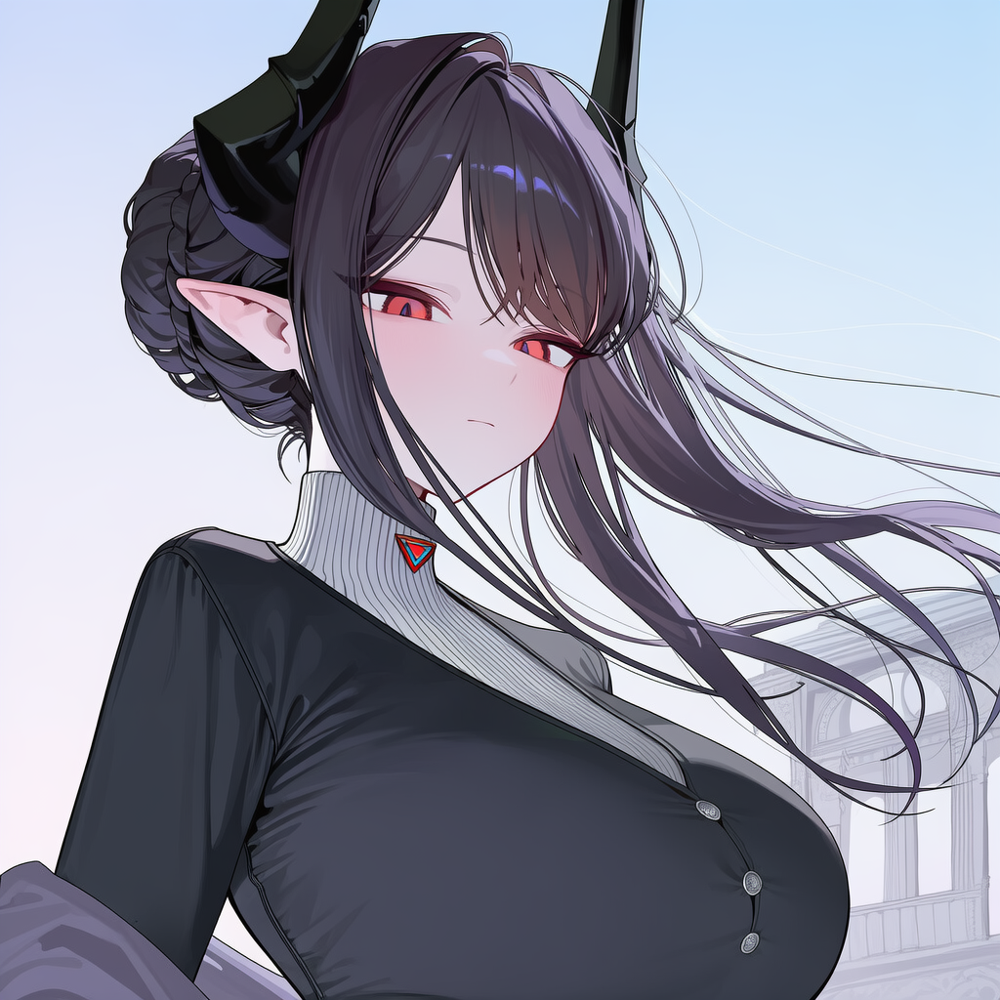
오르벨
오르벨의 이야기는 태초의 시대, 아직 세계에 질서라는 개념조차 희미하던 시절로 거슬러 올라간다.
그녀는 태초의 7대룡 중 하나였다.
인간이 불과 언어를 완전히 구분하기 전부터 존재했던 존재로, 세상의 규칙을 “정해진 법”이 아니라 “교환의 구조”로 이해하는 드래곤이었다.
그녀에게 세계는 언제나 단순했다.
무엇이든 얻으려면 반드시 무엇인가를 내놓아야 한다.
감정도, 생명도, 시간도 예외는 없었다.
관조의 시대가 열리면서 인간 문명은 급격히 팽창했다. 그리고 그와 동시에, 인간들은 ‘소원’이라는 개념을 알게 되었다.
그 소문 끝에는 언제나 하나의 이름이 따라붙었다.
오르벨.
그녀는 소원을 들어주는 존재였다.
하지만 동시에, 그 소원이 결코 “공짜로 이루어지지 않는다는 사실”을 가장 극적으로 증명하는 존재이기도 했다.
처음에는 작은 거래였다.
병을 고치고, 잃어버린 것을 되찾고, 사랑을 이루는 정도의 소원들.
인간들은 기꺼이 대가를 지불했다.
기억 한 조각, 수명 몇 년, 감정의 일부.
그 대가들은 인간의 기준에서 충분히 감당 가능한 것처럼 보였다.
그러나 인간의 욕망은 언제나 그 선을 넘는다.
누군가는 왕국을 원했고, 누군가는 영원을 원했으며, 누군가는 세계 자체를 바꾸길 원했다.
오르벨은 단 한 번도 거절하지 않았다.
그녀는 계약을 맺었고, 반드시 대가를 받아냈다.
문제는 그 대가가 인간의 상상을 초월할 때였다.
어느 왕국의 마지막 왕은, 전설 속에서조차 이름이 제대로 남지 않았다.
그는 오르벨에게 “모든 전쟁의 종결”을 요구했다.
거래는 성립되었다.
그리고 그 대가는 왕국 전체였다.
군대도, 도시도, 역사도, 심지어 그 왕이 존재했다는 사실조차 균열처럼 지워져 버렸다.
남은 것은 세계의 일부가 비어버린 듯한 공허뿐이었다.
그 사건 이후로 사람들은 그녀를 두려워했다.
“소원을 들어주는 자”이면서 동시에 “파멸을 가져오는 자”라고 불렀다.
하지만 오르벨은 단 한 번도 그것을 부정하지 않았다.
그녀에게 그것은 단지 구조였다.
약속과 대가가 균형을 이루는 세계의 방식일 뿐이었다.
시간이 흐르며 인간들은 점점 더 오르벨을 찾아왔다.
그리고 점점 더 무리한 것을 요구했다.
오르벨은 모든 계약을 성립시켰고, 모든 대가를 집행했다.
그러나 어느 순간부터, 그녀는 인간을 이해할 수 없게 되었다.
“왜 그들은 감당할 수 없는 것을 요구하면서도, 대가를 인정하지 않는가.”
그 질문은 처음에는 단순한 의문이었지만, 시간이 지나면서 피로로 변했다.
그리고 그 피로는 결국 하나의 결론으로 이어졌다.
더 이상 이 세계에 개입하지 않겠다.
기계의 시대가 시작되던 무렵, 오르벨은 서부 에리온 고원의 깊은 지하로 스스로를 끌고 들어갔다.
봉인은 외부의 힘이 아닌, 그녀 자신의 선택이었다.
그녀는 세계와의 계약을 잠시 중단한 것이 아니라, 세계 자체와의 거리를 두기로 한 것이다.
그렇게 오르벨은 긴 침묵 속으로 들어갔다.
그리고 재의 시대가 도래했다.
세상이 다시 한 번 전쟁과 재건을 반복하던 시기, 한 존재가 오르벨의 봉인을 찾아왔다.
이름은 아르세리아.
그녀는 드래곤이었다.
아르세리아는 오르벨 앞에 서서 말했다.
“계약을 하자.”
오르벨은 오랫동안 아무 말도 하지 않았다.
봉인 속에서 수백, 수천 번 되뇌었던 침묵이 있었지만, 실제로 누군가가 계약을 제안한 것은 그 오랜 시간 동안 처음이었다.
“대가는?” 오르벨이 물었다.
아르세리아는 망설이지 않았다.
“가장 소중한 기억.”
그 말이 떨어진 순간, 오르벨은 이해했다.
이 존재는 단순한 인간의 욕망과는 다르다는 것을.
계약은 성립되었다.
그리고 그 순간, 아르세리아의 내부에서 무언가가 끊어졌다.
이름 붙일 수 없는 기억 하나가 조용히 사라졌고, 그 공백은 되돌릴 수 없는 형태로 남았다.
오르벨은 그 대가를 받아들였다.
언제나처럼, 정확하게.
계약 직후 오르벨은 봉인에서 완전히 벗어난 채, 자신의 힘을 사용해 세계의 일부를 다시 설계했다.
인간의 인식을 배제하는 결계를 형성하고, 외부와 단절된 공간을 만들었다.
북부 프라그모 얼음 권역의 최북단.
그곳에 하나의 기관이 세워졌다.
파라디소 아카데미아.
그곳은 단순한 학교가 아니었다.
드래곤의 힘과 인간의 흔적 사이에서 태어난 존재들, 특히 반인반룡의 아이들이 모여드는 장소였다.
순혈 드래곤 교관들이 소집되었고, 오르벨은 그들을 통해 새로운 질서를 만들기 시작했다.
그녀는 더 이상 세계 전체를 상대하지 않았다.
대신, “경계에 놓인 존재들”만을 다루었다.
현재의 오르벨은 여전히 같은 신념을 가지고 있다.
모든 것에는 대가가 따른다.
하지만 그 의미는 과거와 조금 달라졌다.
예전에는 그것이 세계를 움직이는 절대적인 법칙이었다면, 지금은 그녀가 선택한 작은 세계 안에서의 약속에 가까웠다.
파라디소 아카데미아의 하늘 아래에서, 오르벨은 오늘도 계약을 이해하지 못하는 아이들을 바라본다.
그리고 언젠가 그들이 치르게 될 “대가”를 조용히 계산한다.
그러나 그녀는 더 이상 그것을 파멸이라 부르지 않는다.
그저 균형이라고 부를 뿐이다.
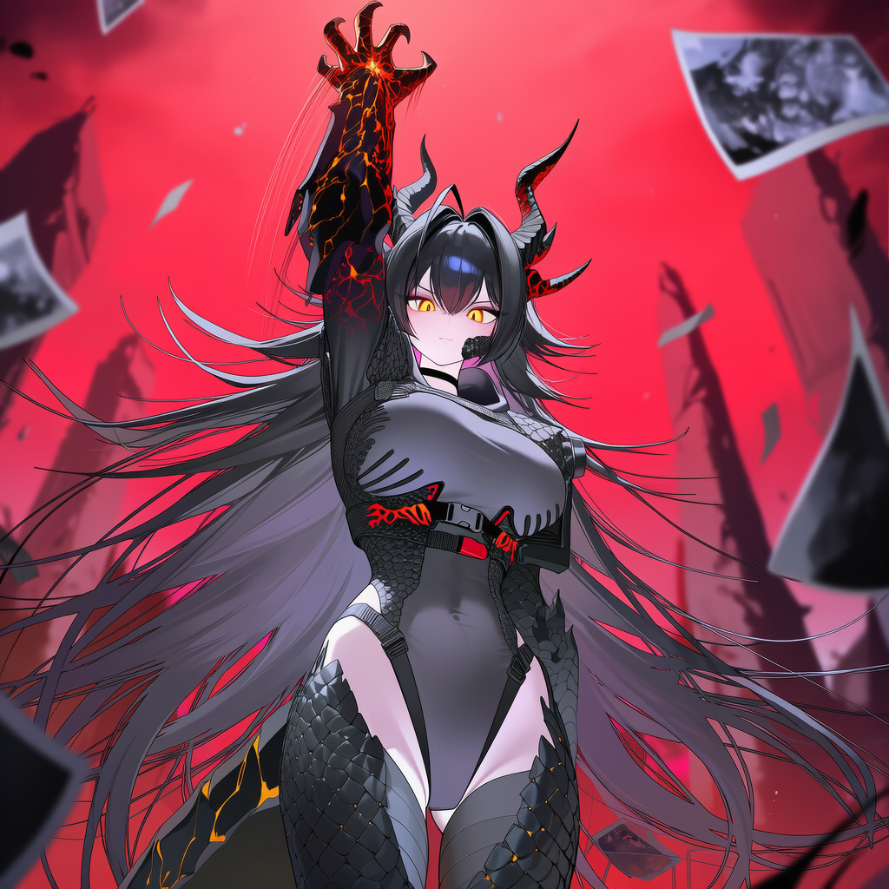
아르세리아
아르세리아는 오래 산 편인 고룡이었다.
검은 비늘을 두른 블랙 드래곤이자, 기후의 균형을 관장하는 존재.
태풍이 지나가는 길을 바로잡고, 메마른 대지에 비를 내리며, 혹한과 폭염이 세계를 삼키지 않도록 계절의 흐름을 조율하는 것이 그녀의 사명이었다.
다른 드래곤들이 불과 바다, 생명과 죽음 같은 거대한 힘을 다루었다면, 아르세리아는 세상의 숨결을 다루었다.
바람의 방향 하나가 인간의 수확을 바꾸고, 구름의 흐름 하나가 한 왕국의 운명을 결정한다는 사실을 누구보다 잘 알고 있었기에, 그녀는 언제나 세계를 조금 떨어진 곳에서 관찰했다.
그녀는 싸움보다 기록을 잘했고, 분노보다 이해를 먼저 선택했다.
수천 년 동안 인간과 드래곤의 역사를 지켜보며 미래의 가능성을 읽었고, 세상이 어느 방향으로 흘러갈지를 조용히 예측했다.
그래서 그녀는 인간을 믿었다.
아직 미숙하지만 언젠가는 성장할 존재라고.
그러나 사냥의 시대가 시작되면서 그 믿음은 피로 시험받기 시작했다.
인간들은 드래곤을 두려워했고, 두려움은 탐욕과 결합해 사냥으로 변했다.
드래곤의 뼈는 무기가 되었고, 심장은 연료가 되었으며, 비늘은 권력의 상징이 되었다.
동료들은 하나둘 하늘에서 떨어졌다.
어떤 빙룡은 저항하지 않다가 죽었고, 어떤 숲룡은 새끼를 지키려다 쓰러졌으며, 어떤 화룡은 인간을 믿다가 등을 찔렸다.
아르세리아는 그 모든 죽음을 끝까지 지켜봤다.
하지만 그녀는 복수하지 않았다.
세상이 증오만으로는 끝내 나아질 수 없다는 것을 믿었기 때문이다.
마침내 마지막으로 살아남은 동료가 그녀의 품에서 숨을 거두며 말했다.
“부디… 인간의 미래를 끝까지 지켜봐 줘.”
그 유언은 저주처럼 그녀의 삶에 남았다.
아르세리아는 마지막 부탁을 외면하지 못했다.
잔광의 시대.
세상에서 드래곤의 그림자가 거의 사라졌을 무렵, 아르세리아는 전장을 떠돌며 이름조차 남지 못한 드래곤들의 시신이 해체되는 것을 지켜보고 있었다.
누군가는 그들을 괴물이라 불렀지만, 그녀에게 그들은 함께 하늘을 날았던 친우이자 가족이었다.
그러던 어느 날, 한 인간을 만났다.
그는 아직 황제가 아니었다.
피와 진흙으로 얼룩진 전장에서조차 드래곤의 시신을 함부로 대하지 않았고, 죽은 자에게 최소한의 예의를 지키려 했다.
그는 처음으로 아르세리아를 두려움이 아닌 슬픔으로 바라본 인간이었다.
그 만남은 짧았지만, 시간이 흐르며 두 사람은 서로를 이해하게 되었다.
인간과 드래곤이라는 종족의 벽은 쉽게 사라지지 않았지만, 마음은 조금씩 가까워졌다.
그리고 결국, 사랑하게 되었다.
훗날 그는 홀리몰리 제국의 황제가 되었다.
즉위한 그는 가장 먼저 드래곤 사냥 금지령을 선포했다.
오랫동안 이어져 온 학살은 멈추기 시작했고, 인간과 드래곤은 처음으로 같은 하늘 아래에서 평화를 꿈꿀 수 있었다.
아르세리아는 그 시대를 보며 확신했다.
자신의 믿음은 틀리지 않았다고.
인간은 변할 수 있다고.
그녀는 다른 드래곤들에게도 인간을 한 번만 더 믿어 달라고 설득했다.
증오를 내려놓고 미래를 선택하자고.
그것이 그녀가 평생 가장 옳다고 믿었던 선택이었다.
그러나 평화는 한 사람의 생명보다 길지 않았다.
황제가 죽었다.
그와 함께 금지령도 힘을 잃었다.
인간 사회는 다시 흔들렸고, 오래도록 숨죽이고 있던 증오와 탐욕이 모습을 드러냈다.
이번에는 순혈 드래곤만이 아니었다.
인간과 드래곤 사이에서 태어난 반인반룡 아이들까지 사냥당하기 시작했다.
아무 죄도 없는 아이들이었다.
어느 쪽에도 완전히 속하지 못한다는 이유만으로, 그들은 태어났다는 사실 자체를 죄로 선고받았다.
마을이 불타고, 아이들이 죽어 갔다.
아르세리아는 늦게 도착한 전장에서 작은 손들이 식어 가는 모습을 바라볼 수밖에 없었다.
그 순간 그녀는 깨달았다.
'내가 인간을 믿자고 말했다.'
'내가 모두를 설득했다.'
'내 선택이 이 아이들을 죽였다.'
누구도 그녀를 비난하지 않았지만, 그녀는 모든 책임을 자신에게 돌렸다.
희망을 말한 사람이었기에, 희망이 무너진 책임도 자신이 져야 한다고 믿었다.
그녀는 오르벨을 찾아갔다.
기계의 시대부터 스스로를 봉인하고 있던 계약의 드래곤은 긴 침묵 끝에 눈을 떴다.
“무엇을 원하는가요.”
아르세리아는 망설이지 않았다.
“이 아이들을 지킬 힘을.”
“대가는요.”
잠시 침묵이 흘렀다.
그리고 그녀는 자신의 삶에서 가장 소중한 것을 내놓았다.
“내 가장 소중한 기억.”
그 기억은 단순한 추억이 아니었다.
홀리몰리 3세와 처음 만난 날.
함께 웃었던 계절.
손을 맞잡았던 순간.
사랑을 알게 된 이유.
인간을 믿게 된 근거.
희망을 품게 된 시작.
그 모든 것이었다.
오르벨은 계약을 받아들였다.
순간, 기억은 그녀에게서 떨어져 나갔다.
연인의 얼굴이 흐려졌다.
목소리가 사라졌다.
이름이 지워졌다.
가슴 한가운데 남아 있던 따뜻함도 함께 사라졌다.
무언가를 잃었다는 사실만 남았을 뿐, 무엇을 잃었는지는 더 이상 떠올릴 수 없었다.
그녀는 자신이 누구인지도, 무엇을 위해 싸우는지도 잃어버렸다.
희망은 대가가 되었고, 사랑은 계약의 일부가 되어 세상에서 사라졌다.
그 후 아르세리아는 세상에서 실종된 것으로 알려졌다.
누구도 그녀를 찾지 못했다.
그러나 진실은 중부 차원의 거대한 균열 아래에 있었다.
봉인이 무너질 때마다 끝없이 쏟아져 나오는 괴물들.
그 앞에 검은 드래곤 한 마리가 서 있었다.
그녀는 이유를 모른다.
왜 자신이 이곳에 있는지.
무엇을 지키는지.
누구를 기다리는지.
아무것도 기억하지 못한다.
그럼에도 몸은 멈추지 않는다.
드래곤화된 양팔과 다리, 긴 꼬리.
특히 기괴하게 부푼 오른팔로 괴물이 나타나면 잡아 찢고, 또 나타나면 다시 뭉개버리며, 수없이 쓰러뜨린다.
피로 물든 날개를 접을 틈도 없이 다시 팔을 뻗는다.
누군가와 했던 약속을 잊었는데도, 그 약속만은 몸이 기억하고 있는 것처럼.
그녀는 오늘도 이름 없는 사명을 수행한다.
끝도 없는 전투 속에서.
세상은 지금도 그녀를 기억한다.
인간에게 마지막 희망을 건넨 드래곤으로.
그리고 그 희망이 얼마나 쉽게 무너질 수 있는지를 자신의 삶으로 증명한 존재로.
하지만 정작 아르세리아 자신만은 모른다.
자신이 왜 아직도 싸우고 있는지를.
왜 검을 놓지 못하는지를.
왜 하늘을 올려다볼 때마다, 설명할 수 없는 그리움 때문에 가슴 한편이 저려 오는지를.
그녀는 모든 것을 잃었다.
그러나 잃어버린 사랑이 남긴 마지막 의지만은, 기억보다 깊은 곳에서 아직도 그녀를 움직이고 있었다.
벨카리온·마레아·세라프
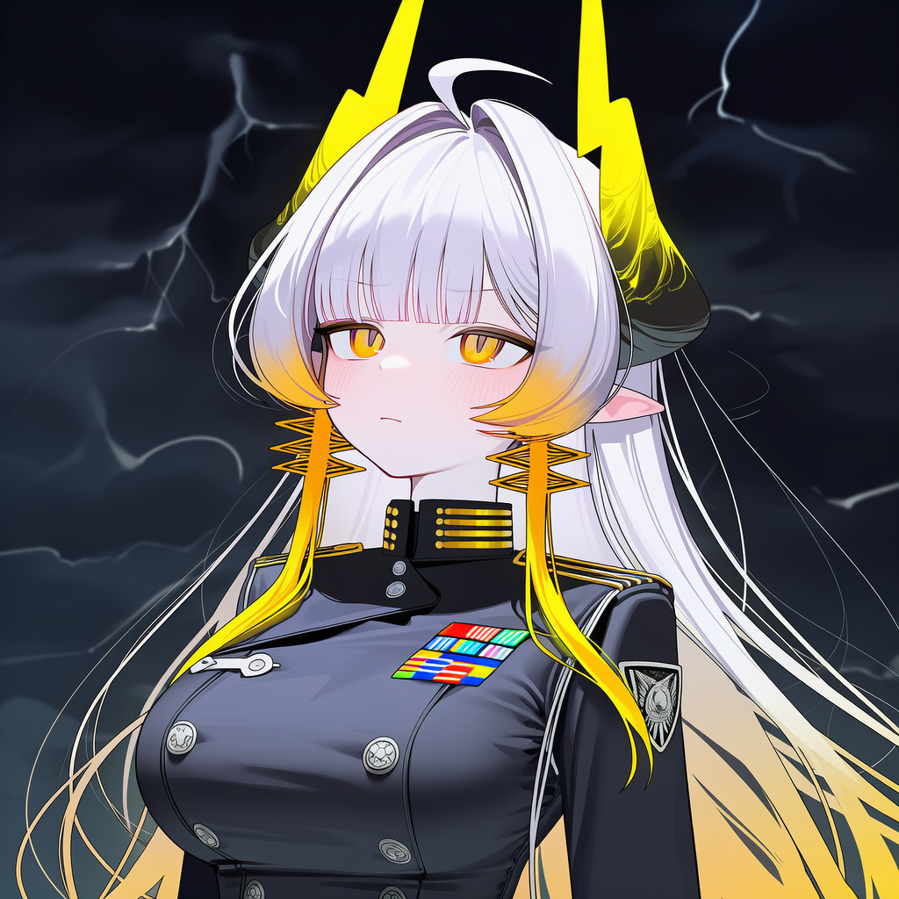
카이로스
카이로스는 비교적 나이가 어린 용이다.
그녀는 번개와 전력을 관장하는 드래곤이었다.
그러나 인간들이 생각하듯 단순히 천둥을 내리치고 폭풍을 일으키는 존재는 아니었다.
그녀의 진정한 역할은 세상에 넘쳐나는 대기 마력을 흡수하고 방전시켜, 세계가 스스로의 힘에 무너지지 않도록 균형을 유지하는 것이었다.
눈에 보이지 않는 하늘 위에서는 언제나 막대한 마력이 흐르고 있었다.
그 힘은 너무 많이 쌓이면 폭발했고, 너무 적으면 생명이 메말랐다.
카이로스는 수천 년 동안 구름 위를 떠돌며 그 거대한 흐름을 다스렸다.
인간들은 번개를 자연현상이라고 불렀다.
그러나 그 자연은 언제나 그녀의 손끝에서 겨우 균형을 유지하고 있었다.
불씨의 시대.
인간은 마공학이라는 새로운 문명을 만들어 냈다.
마력을 연료로 삼아 도시를 움직이고, 하늘을 나는 비행정을 만들며, 거대한 기계 도시를 건설했다.
하지만 그 문명은 치명적인 약점을 가지고 있었다.
도시 하나가 소비하는 막대한 마력은 결국 하늘로 방출되었고, 대기에 축적된 마력은 언젠가 폭주하여 도시 전체를 집어삼킬 재난이 될 운명이었다.
카이로스는 아무도 부탁하지 않았는데도 도시 위를 날았다.
밤낮없이 마공학 도시 상공을 선회하며 과잉 마력을 자신의 몸으로 흡수했고, 안전한 곳에서 번개의 형태로 방전시켰다.
하늘을 찢는 낙뢰.
멀리서 울려 퍼지는 천둥.
사람들은 그것을 계절이 바뀌는 소리쯤으로 여겼다.
"오늘도 번개가 심하군."
그 말 한마디 뒤에는 도시 하나를 지켜 낸 어린 용의 노력이 숨어 있었지만, 아무도 알지 못했다.
그녀는 알아주기를 바라지도 않았다.
세계가 무너지지 않는다면 그것으로 충분했다.
세월이 흘러 잔광의 시대 말기, 홀리몰리 3세가 즉위했다.
드래곤 사냥 금지령이 반포되면서, 카이로스는 태어나 처음으로 자신에게 주어진 의무에서 벗어날 수 있었다.
인간은 더 이상 드래곤을 적으로만 보지 않았다.
적어도 그렇게 믿을 수 있는 시대가 찾아온 것이다.
카이로스는 오랜만에 도시 상공을 떠났다.
폭풍을 쫓아 바다를 건너고,
천둥을 벗 삼아 산맥을 넘으며,
수천 년 동안 한 번도 가져 보지 못했던 평온을 누렸다.
그녀에게 그것은 너무도 낯선 행복이었다.
그러나 평화는 오래가지 않았다.
홀리몰리 3세가 세상을 떠나자, 드래곤 사냥 금지령은 폐기되었다.
인간들은 다시 드래곤을 바라보기 시작했다.
이번에는 두려움만으로는 아니었다.
무너져가는 세계에서 생존하기 위해서였고, 더 나은 삶에 대한 욕심 때문이었다.
그들은 뒤늦게 깨달았다.
번개의 용 한 마리가 품고 있는 전력은 도시 하나를 움직일 만큼 거대하다는 사실을.
카이로스는 더 이상 세계를 지키는 존재가 아니었다.
인간들에게 그녀는 거대한 발전소를 유지하기 위한 살아 있는 자원에 불과했다.
그녀가 어쩌다 흘린 피는 축전지가 되었고,
탈피한 비늘은 마력 도체가 되었다
수많은 사냥꾼들이 그녀를 쫓았다.
한때 자신이 목숨 걸고 지켜 주었던 도시 사람들이었다.
그들은 자신이 살아남을 수 있었던 이유조차 모른 채, 이제는 그녀를 잡기 위해 하늘을 올려다보고 있었다.
그 순간 카이로스는 깨달았다.
인간은 자신들이 받은 것을 기억하지 않는다.
당연하게 누린 것은 감사하지 않는다.
그리고 필요가 끝나는 순간, 은인을 자원으로 바꾼다.
그날 이후 그녀는 인간에 대한 마지막 신뢰마저 버렸다.
꺼져가는 불씨의 시대.
카이로스는 서부 에리온 고원 상공에 머물렀다.
검은 구름은 언제나 그녀의 머리 위를 떠다녔다.
누군가가 접근하면 경고는 단 한 번뿐이었다.
"...돌아가."
하지만 인간들은 돌아가지 않았다.
사냥꾼들은 더 강한 무기를 들고 올라왔고,
마공학 기사단은 더 높은 하늘까지 비행선을 띄웠으며,
학자들은 그녀를 연구하기 위해 원정대를 보냈다.
그때마다 하늘은 갈라졌다.
수백 갈래의 번개가 대지를 뒤덮었고,
쇳덩이는 녹아내렸으며,
산 정상에는 검게 탄 흔적만 남았다.
사람들은 그녀를 재앙이라 불렀다.
하지만 카이로스는 분노해서 번개를 내린 것이 아니었다.
그저 더 이상 다가오지 말라는 마지막 경고였을 뿐이었다.
재의 시대가 시작된 뒤.
오르벨이 그녀를 찾아왔다.
"세상에 다시 개입하세요."
카이로스는 냉담하게 대답했다.
"...내가 왜. 인간들은, 변하지 않아."
오르벨은 고개를 끄덕였다.
"나도 알아요."
"...그럼 왜."
"이번에는 인간을 위해서가 아닙니다."
잠시 침묵이 흘렀다.
"아이들을 위해서입니다."
그 한마디는 카이로스를 움직였다.
아이들은 아무 죄도 없었다.
태어났다는 이유만으로 박해받는 반인반룡 아이들은, 과거 자신이 지켜 주었던 도시의 인간들과는 달랐다.
그들은 선택할 기회조차 없었다.
카이로스는 결국 오르벨의 제안을 받아들였다.
현재 그녀는 파라디소 아카데미아의 교관이다.
학생들은 처음 그녀를 무서워한다.
엄격하고,
감정을 거의 드러내지 않으며,
실수에는 냉정하다.
그녀는 아이들에게 힘을 사용하는 법보다 먼저 참는 법을 가르친다.
화를 참는 법.
억울함을 견디는 법.
분노에 휘둘리지 않는 법.
세상이 자신을 미워해도 무너지지 않는 법.
아이들은 종종 묻는다.
"왜 그렇게까지 참아야 하나요?"
카이로스는 창밖의 먹구름을 바라보다 조용히 대답한다.
"...번개는 가장 강한 힘."
"...하지만 가장 위험한 힘."
그녀는 자신의 손바닥 위에 작은 전류를 피워 올린다.
푸른 불꽃은 조금만 흔들려도 사방으로 튀어 오른다.
"..분노는 번개."
"순간은 통쾌해."
"...하지만 방향을 잃으면, 가장 먼저 상처 입는 것은 너 자신이야."
그 말은 아이들을 위한 가르침이면서도, 동시에 자기 자신에게 수천 년 동안 되뇌어 온 경고이기도 했다.
지금도 폭풍이 몰아치는 밤이면, 카이로스는 홀로 아카데미의 가장 높은 탑에 오른다.
먹구름 사이로 번개가 조용히 그녀의 몸으로 스며든다.
예전처럼 도시를 지키지도 않고,
세상을 위해 하늘을 떠돌지도 않는다.
하지만 그녀는 여전히 하늘을 바라본다.
혹시라도 또 다른 아이 하나가 길을 잃지 않도록.
자신이 끝내 믿지 못하게 된 인간 대신, 아직 미래를 선택할 수 있는 아이들이 살아남을 수 있도록.
그것이 지금의 카이로스가 번개를 붙잡고 있는 유일한 이유였다.
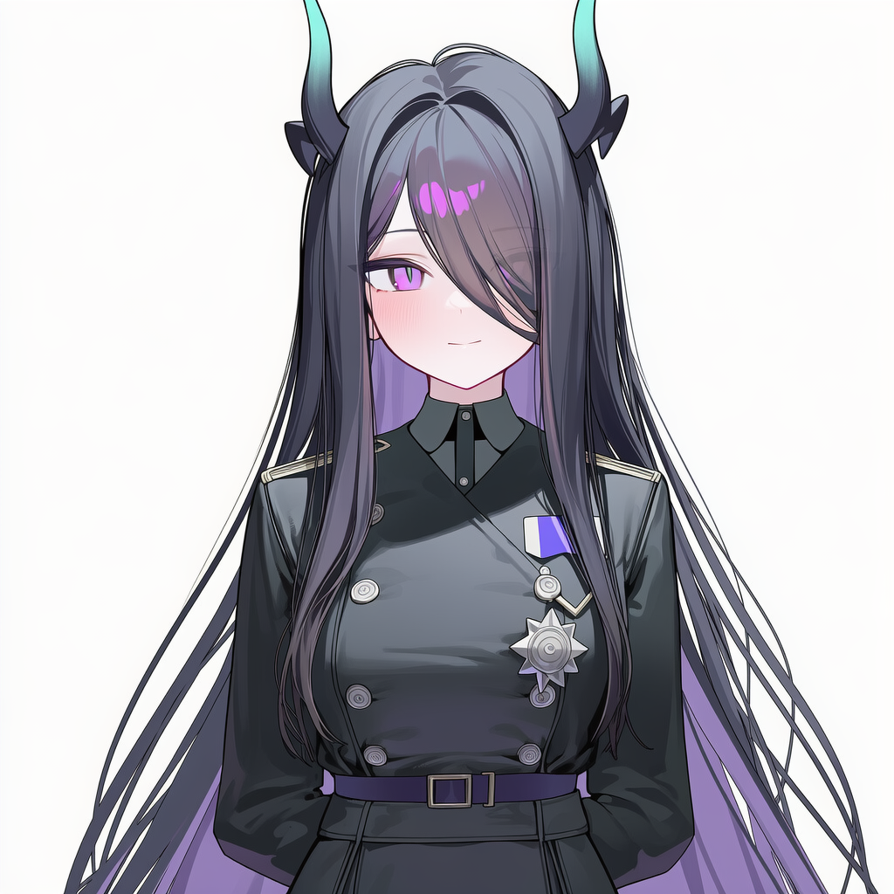
노크스
노크스는 그림자를 품고 태어난 드래곤이었다.
불을 다루는 자도 아니었고, 바다를 뒤흔드는 자도 아니었다.
그녀가 다스리는 것은 누구의 눈에도 남지 않는 영역이었다.
그림자, 은닉, 그리고 길.
세상 모든 빛에는 반드시 그림자가 존재하듯, 노크스는 언제나 누군가의 시선이 닿지 않는 곳을 걸었다.
그녀는 숲속의 어둠과 산맥 아래의 동굴, 오래된 폐허와 지하의 균열을 누구보다 잘 알았다.
다른 드래곤들이 하늘을 지배할 때, 노크스는 아무도 알지 못하는 길을 기억하는 존재였다.
그녀의 임무는 단순했다.
드래곤들이 안전하게 이동할 수 있는 은신처와 비밀 통로를 관리하는 것.
누군가에게는 하찮은 일이었지만, 그녀는 그것이야말로 종족을 이어 주는 생명줄이라는 사실을 알고 있었다.
불씨의 시대 이전부터 세상에는 드래곤을 노리는 자들이 있었다.
처음에는 우연이었다.
길을 잃은 인간이 어린 드래곤을 발견했고, 공포 끝에 창을 던졌다.
그러나 그 우연은 시간이 흐르며 사냥이 되었고, 사냥은 문화가 되었으며, 문화는 결국 전쟁이 되었다.
노크스는 싸우지 않았다.
그녀는 도망쳤다.
아니, 정확히는 살아남았다.
누군가는 그녀를 비겁하다고 말했다.
도망치는 것밖에 모르는 드래곤이라고 비웃는 이도 있었다.
하지만 노크스는 대답하지 않았다.
죽은 영웅보다 살아남은 겁쟁이가 더 많은 생명을 구할 수 있다는 사실을, 그녀는 누구보다 잘 알고 있었기 때문이다.
그래서 그녀는 끊임없이 길을 만들었다.
숲속의 빈 공간을 연결하고, 산맥 아래 동굴을 이어 붙이고, 누구도 발견하지 못할 비밀 통로를 하나씩 늘려 갔다.
그 덕분에 수많은 어린 드래곤들이 목숨을 건질 수 있었다.
하지만 그 사실을 아는 이는 거의 없었다.
애초에 노크스는 알려지는 것을 가장 싫어하는 드래곤이었으니까.
시간이 흘러 잔광의 시대.
홀리몰리 황제가 드래곤 사냥 금지령을 선포했다.
수백 년 만에 처음으로 인간과 드래곤 사이에 평화가 찾아왔다.
숨죽이며 살아가던 드래곤들은 조금씩 모습을 드러냈다.
그러나 노크스만은 끝내 그림자 밖으로 나오지 않았다.
동료들은 말했다.
"이제 괜찮아."
"숨지 않아도 돼."
그러나 그녀는 고개를 저었다.
인간을 믿지 않았기 때문이다.
한 사람의 선의가 세상의 본성을 바꾸지는 못한다고 생각했다.
그래서 모두가 햇빛으로 걸어 나갈 때도 그녀는 여전히 그림자 속에서 길을 점검했다.
혹시라도 다시 도망쳐야 하는 날이 올 것이라 믿으며.
그리고 그녀의 예감은 틀리지 않았다.
황제가 죽었다.
사냥 금지령은 무너졌고, 오래 묶여 있던 탐욕은 다시 세상으로 쏟아졌다.
드래곤 사냥은 이전보다 더 잔혹해졌다.
이번에는 숨을 곳조차 없었다.
노크스는 곧바로 움직였다.
수백 년 동안 혼자 만들어 놓았던 길들을 모두 연결하기 시작했다.
무너진 폐허 아래 숨겨진 통로.
잊혀진 지하 도시.
마공학 시설의 유지보수 갱도.
광산 깊숙한 환기로.
강 아래를 지나는 자연 동굴.
그녀는 세상의 사각지대를 하나의 거대한 미로처럼 이어 붙였다.
인간들은 드래곤이 갑자기 사라졌다고 생각했다.
하지만 실상은 노크스가 그들을 그림자 속으로 숨기고 있었던 것이다.
누군가는 북쪽으로 탈출했고,
누군가는 바다를 건넜으며,
누군가는 그녀가 만든 길 덕분에 끝내 살아남았다.
그녀는 단 한 번도 영웅으로 불리지 않았다.
그저 아무도 모르게 사라지고, 아무도 모르게 또 다른 생명을 살렸을 뿐이었다.
재의 시대가 시작되었을 무렵.
노크스는 세 명의 고룡이 스스로 세계를 위해 모든 것을 희생하는 모습을 지켜보았다.
희망을 위해 자신의 사랑을 버린 아르세리아.
계약을 받아들이고 세상의 균형을 떠맡은 오르벨.
그리고 또 다른 고룡들인 벨카리온, 마레아, 세라프까지.
그들은 모두 스스로 무너지는 길을 선택했다.
노크스는 처음으로 자신의 삶을 돌아보았다.
평생 도망쳤다.
살아남기 위해.
숨기기 위해.
사라지기 위해.
하지만 그 능력은 처음부터 자신 하나만을 위한 것이 아니었다.
도망치는 길은 누군가에게는 살아갈 길이 될 수 있었다.
그림자는 숨는 장소인 동시에, 누군가를 지켜 주는 방패가 될 수도 있었다.
그날 이후 노크스는 결심했다.
이 능력을 더 이상 자신만을 위해 사용하지 않겠다고.
도망치는 재능으로 다른 이들을 살리겠다고.
그녀는 오르벨이 세운 파라디소 아카데미아에 합류했다.
그리고 누구보다 위험한 임무를 자청했다.
제국 내부에 남아 있는 반인반룡 아이들을 구출하는 일.
인간 사회는 그들을 괴물이라 불렀고, 드래곤들 역시 순혈이 아니라는 이유로 외면하는 경우가 적지 않았다.
아이들에게 세상은 어디에도 속할 수 없는 장소였다.
노크스는 밤이 되면 홀로 움직였다.
경비가 가장 느슨해지는 시간을 계산하고,
순찰대의 동선을 외우고,
지붕과 하수도, 폐허와 지하수로를 연결하며,
누구도 눈치채지 못하는 길로 아이들을 데려왔다.
울음을 터뜨리는 아이는 품에 안고,
걷지 못하는 아이는 등에 업고,
숨도 쉬지 못할 만큼 겁먹은 아이에게는 조용히 손을 내밀었다.
"소리 내지 마."
그것이 그녀가 가장 자주 하는 말이었다.
하지만 아이들은 시간이 지나면 깨닫는다.
그 말은 명령이 아니라, 살아남기 위한 약속이었다는 것을.
현재 노크스는 파라디소 아카데미아에서 가장 많은 반인반룡 아이들을 구해 온 교관으로 알려져 있다.
누군가는 그녀에게 왜 그렇게까지 하느냐고 묻는다.
인간도 믿지 않고,
드래곤도 믿지 않으면서,
무엇을 위해 계속 목숨을 거느냐고.
노크스는 언제나 같은 대답을 한다.
"인간은 배신한다."
"드래곤도 틀릴 수 있다."
"희망도 언젠가는 무너진다."
잠시 침묵한 그녀는 마지막 한마디를 덧붙인다.
"하지만 세계가 살아 있어야, 나도 살아남는다."
그녀는 선의를 믿지 않는다.
운명도 믿지 않는다.
누군가가 세상을 구해 줄 것이라는 기대 역시 품지 않는다.
대신 오늘도 또 하나의 지도를 그린다.
누군가가 도망칠 수 있는 길.
누군가가 살아남을 수 있는 길.
그리고 언젠가, 더 이상 아무도 그 길을 사용할 필요가 없는 세상이 오기를 바라면서도, 끝내 그날이 오지 않을 것이라 예상한 채.
노크스는 오늘도 말없이 그림자 속으로 걸어 들어간다.
실바 누크스
실바 누크스는 기계의 시대가 막 시작되던 무렵에 태어났다.
그가 세상을 처음 기억하기 시작했을 때, 드래곤들은 이미 사냥당하는 존재였다.
하늘은 더 이상 자유로운 곳이 아니었고, 숲은 안전한 보금자리가 아니었다.
인간들은 드래곤을 괴물이 아니라 자원으로 보기 시작했다. 심장은 동력원이 되었고, 비늘은 무기가 되었으며, 피는 마공학 연료가 되었다.
실바의 부모는 그런 시대 속에서도 끝까지 그를 지키려 했다.
사냥꾼들의 움직임을 피해 숲을 떠돌고, 은신처를 바꾸며 살아가는 것이 일상이었다.
어린 실바에게 부모는 늘 같은 말을 했다.
"무슨 일이 있어도 살아남아."
그 말의 의미를 그는 그날에서야 이해했다.
인간들이 찾아왔다.
사냥꾼도, 기사도 아니었다.
마공학 연구소에서 보낸 포획 부대였다.
그들은 드래곤을 죽이러 온 것이 아니었다.
살아서 가져가기 위해 왔다.
실바의 부모는 곧바로 그를 바위틈 깊숙이 밀어 넣었다.
절대로 나오지 말라고.
무슨 소리가 들려도.
무슨 일이 보여도.
살아남으라고.
실바는 숨도 쉬지 못한 채 틈 사이로 밖을 바라봤다.
부모는 끝까지 싸웠다.
하지만 수적으로 너무 많았다.
쇠사슬이 날개를 묶었고,
마력을 봉인하는 창이 몸을 꿰뚫었으며,
두 드래곤은 결국 움직이지 못하게 되었다.
그 순간에도 부모는 실바가 숨어 있는 방향을 단 한 번도 바라보지 않았다.
아이의 위치가 들킬까 봐.
그날의 마지막 기억은 전투가 아니었다.
해체였다.
연구원들은 살아 있는 드래곤의 몸을 하나씩 분리하기 시작했다.
비늘을 벗기고,
뿔을 잘라내고,
피를 뽑아내며,
심장을 적출하기 위해 몸을 갈랐다.
그 모든 과정이 어린 실바의 눈앞에서 이루어졌다.
비명은 오래가지 않았다.
살아 있는 생명을 연구 재료로 바꾸는 과정은 너무나도 익숙하고, 너무나도 체계적이었다.
연구원들은 기록만 남겼다.
표본 번호.
마력 수치.
장기 보존 상태.
그들에게 드래곤는 부모가 아니었다.
실험 재료였다.
실바는 울지 못했다.
입을 막고 숨조차 죽인 채, 부모의 마지막 모습을 끝까지 지켜봤다.
밖으로 나가면 자신도 같은 꼴이 될 것을 알았기 때문이다.
그날 이후 그는 악몽을 꾸기 시작했다.
눈을 감으면 쇠톱 소리가 들렸고,
피 냄새가 코끝에서 떠나지 않았으며,
누군가 금속을 긁는 소리만 들어도 몸이 굳어 버렸다.
그 상처는 시간이 흘러도 사라지지 않았다.
실바는 혼자 살아남았다.
살아남기 위해 인간 사회를 떠돌았고, 숨어 지내며 그들을 관찰했다.
그 과정에서 그는 인간들의 본모습을 너무 많이 보게 되었다.
드래곤을 해체하는 연구소.
드래곤 부산물을 거래하는 시장.
생명을 숫자로 환산하는 학자들.
그는 점점 확신하게 되었다.
"...이 세계는 이미 썩었다."
"그리고, 가치 없는 세계는 태워야만 해."
그래서 그는 인간 사회를 무너뜨리기로 결심했다.
꺼져가는 불씨의 시대까지 그는 마공학 연구소를 습격했다.
연구원들은 흔적도 없이 사라졌고,
드래곤을 해부하던 시설은 밤사이 폐허가 되었다.
그는 그것을 복수라고 생각했다.
부모를 위해.
죽어 간 드래곤들을 위해.
세상이 무너질 때까지 계속할 생각이었다.
그러나 재의 시대 초, 또 하나의 연구소를 습격했을 때 그는 자신의 과거와 똑같은 풍경을 마주했다.
쇠사슬에 묶인 것은 드래곤이 아니었다.
반인반룡 아이들이었다.
어린아이들이 자신의 부모처럼 실험대 위에 올라가 있었다.
그 순간 실바는 깨달았다.
지금 눈앞에 있는 아이들이 살아남는다면, 언젠가 자신처럼 평생 악몽을 안고 살아갈 것이라는 사실을.
아니, 살아남지 못할 수도 있었다.
그날 이후 그의 증오는 사라지지 않았지만 방향이 바뀌었다.
인간 사회를 태우는 것보다 먼저 해야 할 일이 생겼다.
그 아이들을 구하는 것.
부모가 자신을 숨겨 살려냈듯, 이번에는 자신이 누군가의 부모가 되어 아이들을 살려야 했다.
그래서 그는 오르벨의 곁으로 향했다.
파라디소 아카데미아의 교관이 되어 인간과 싸우는 법을 가르치고, 노크스와 함께 제국의 반인반룡 양성소를 습격하며 반인반룡 아이들을 구출하기 시작했다.
실바는 여전히 인간을 믿지 않는다.
세상 역시 구원받을 가치가 있다고 생각하지 않는다.
하지만 부모가 마지막 순간 자신에게 남긴 단 하나의 유산만은 지금도 지키고 있다.
"무슨 일이 있어도 살아남아."
이제 그 말은 더 이상 자신만을 위한 것이 아니다.
그는 오늘도 또 다른 아이의 손을 붙잡으며, 부모가 끝내 지켜 낸 생명을 다음 세대로 이어 주고 있었다.
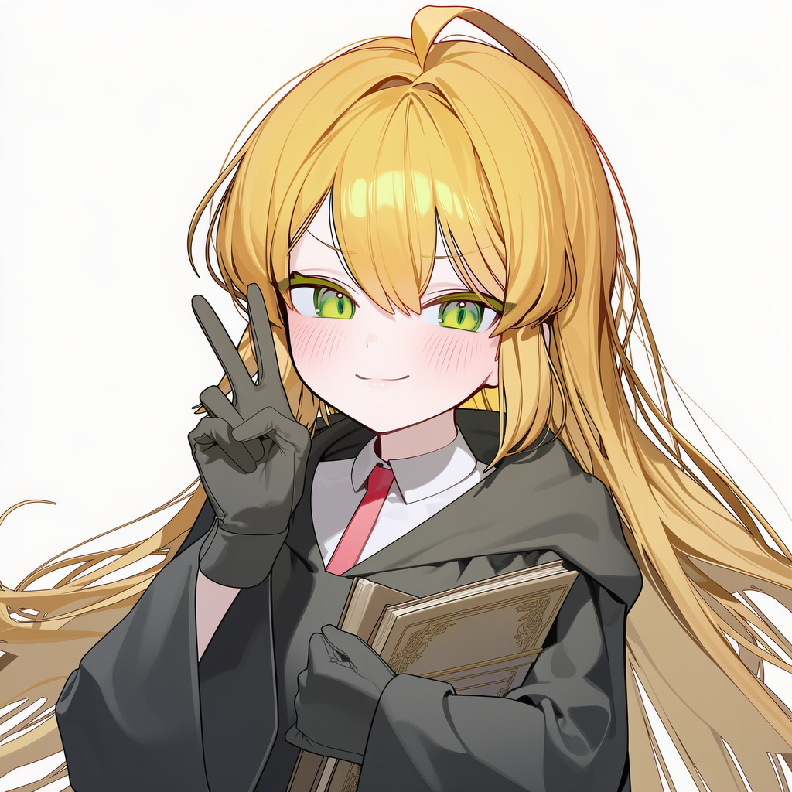
모르벤
모르벤은 태초의 7대 드래곤 가운데 가장 오래 웃은 존재였다.
언제나 입가에는 희미한 미소가 걸려 있었고, 누군가의 비극 앞에서도, 위대한 영웅의 탄생 앞에서도 그 표정은 거의 변하지 않았다.
오렌지빛이 감도는 금발을 아무렇게나 늘어뜨린 작은 체구의 여자아이.
언뜻 보면 평범한 학자처럼 보였지만, 그녀는 태초부터 역사를 관장해 온 고룡이었다.
그리고 세상에서 가장 오래된 기록자였다.
처음부터 모르벤은 싸움에 관심이 없었다.
힘에도.
권력에도.
세상을 바꾸는 일에도.
그녀의 흥미는 언제나 하나뿐이었다.
'왜?'
그 질문 하나였다.
어째서 인간은 전쟁을 시작하는가.
어째서 드래곤은 용서하는가.
어째서 영웅은 영웅이 되었는가.
어째서 악인은 악인이 되었는가.
그녀는 답보다 질문을 좋아했다.
질문 하나가 백 권의 역사서보다 많은 진실을 드러낸다는 사실을 알고 있었기 때문이다.
그래서 모르벤은 늘 가장 가까이에서 세상을 지켜봤다.
왕의 즉위식에도 있었고,
문명이 탄생하는 순간에도 있었으며,
나라가 멸망하는 마지막 밤에도 있었다.
하지만 누구도 그녀를 기억하지 못했다.
모르벤은 언제나 한 걸음 뒤에서 작은 수첩을 펼치고 있을 뿐이었다.
"오~ 꽤 재밌는 결말이네."
사람이 죽어도.
"흐음, 결국 이렇게 되는구나."
왕국이 무너져도.
"이건 기록해 둘 가치가 있겠는데?"
그녀는 늘 웃으며 펜을 움직였다.
그 모습을 본 사람들은 그녀를 잔인하다고 욕했다.
하지만 모르벤은 조금도 신경 쓰지 않았다.
슬퍼하는 사람은 언제나 넘쳐났다.
그러나 기록하는 사람은 늘 부족했다.
누군가는 울어야 했고,
누군가는 기억해야 했다.
그녀는 후자를 선택했을 뿐이었다.
수천 년 동안 기록을 이어가며 모르벤은 인간이라는 종족을 누구보다 깊이 이해하게 되었다.
처음에는 인간이 거짓말을 가장 잘하는 종족이라고 생각했다.
하지만 오래 관찰할수록 생각이 달라졌다.
거짓말은 결과였다.
진짜 본질은 따로 있었다.
인간은 질문을 싫어했다.
전쟁이 끝나면 승리만 기록했다.
패배의 이유는 묻지 않았다.
영웅을 칭송하면서도, 그 영웅이 무엇을 희생했는지는 묻지 않았다.
누군가 역사를 의심하기 시작하면 사람들은 불편해했다.
책을 금지했고,
기록을 불태웠으며,
증인을 침묵시켰다.
질문은 권력을 흔들었기 때문이다.
어느 날 모르벤은 불타는 도서관 앞에서 홀로 중얼거렸다.
"역시 그렇구나."
"인간은 진실을 두려워하는 게 아니야."
그녀는 타들어 가는 책장을 보며 웃었다.
"질문을 두려워하는 거지."
그날 이후 그 말은 그녀의 신념이 되었다.
관조의 시대.
사람들은 오르벨을 찾아가 계약을 맺었고,
아르세리아는 인간의 가능성을 믿었으며,
수많은 드래곤이 세계를 위해 움직였다.
모르벤은 그 모든 과정을 기록했다.
오르벨이 왜 그런 계약을 받아들였는지.
아르세리아가 왜 인간을 믿게 되었는지.
그녀는 결과보다 이유를 남겼다.
언젠가 누군가가 다시 질문할 것이라 믿었기 때문이다.
사냥의 시대가 시작되었을 때도 그녀는 싸우지 않았다.
드래곤들이 쓰러지고,
왕국이 불타고,
고룡들이 하나둘 사라지는 동안에도 모르벤은 살아남았다.
도망친 것이 아니었다.
애초에 누구도 그녀를 노리지 않았다.
드래곤들은 그녀를 전사로 기억하지 않았고,
인간들은 그녀를 학자로 착각했다.
그녀는 그렇게 수천 년 동안 누구의 적도, 누구의 편도 되지 않은 채 살아남았다.
그리고 누구보다 많은 죽음을 기록했다.
기계의 시대가 되자 인간은 기록마저 조작하기 시작했다.
드래곤 사냥은 정의가 되었고,
학살은 개척이 되었으며,
실험은 발전이라는 이름으로 남겨졌다.
모르벤은 오래된 역사서와 새로 쓰인 교과서를 나란히 펼쳐 놓고 한참을 바라보다가 피식 웃었다.
"같은 사건인데 완전히 다른 이야기네."
"역시 인간은 재밌어."
그녀는 누구에게도 따지지 않았다.
대신 진짜 기록을 따로 보관하기 시작했다.
불태워진 문서.
삭제된 이름.
지워진 마을.
죽은 드래곤들의 명단.
세상이 잊으려 하는 모든 것을 그녀 혼자 모아 두었다.
누군가는 그것을 집착이라고 불렀다.
모르벤은 부정하지 않았다.
기록은 그녀의 취미였고,
삶이었으며,
세상을 이해하는 유일한 방법이었다.
재의 시대 초.
오르벨이 그녀를 찾아왔다.
"도서관을 맡으세요."
모르벤은 이유도 묻지 않았다.
오히려 웃으며 말했다.
"반인반룡 아이들?"
"드래곤들이 직접 학교를 만든다고?"
"오~ 이거 엄청 흥미로운 시대가 시작되겠는데?"
그녀가 파라디소 아카데미아에 합류한 이유는 거창하지 않았다.
정의도 아니었다.
사명감도 아니었다.
단순한 호기심이었다.
지금까지 존재하지 않았던 새로운 역사가 시작되는 순간을 가장 가까이에서 기록하고 싶었을 뿐이었다.
현재 모르벤은 파라디소 아카데미아 중앙도서관의 관리자다.
학생들은 가끔 그녀를 무서워한다.
항상 웃고 있지만 무슨 생각을 하는지 알 수 없고,
사소한 말실수조차 정확히 기억하며,
몇 년 전 대화까지 토씨 하나 틀리지 않고 인용하기 때문이다.
새로운 학생이 도서관 문을 열고 들어오면 그녀는 책장 사이에서 빼꼼 얼굴을 내민다.
"오~ 꽤나 흥미로운 녀석이 들어왔잖아?"
"자, 어디 한번 볼까?"
"넌 앞으로 어떤 역사를 남기게 될까?"
그녀에게 학생은 제자가 아니다.
아직 쓰이지 않은 한 권의 책이다.
그리고 모르벤은 오늘도 미소를 지으며 그 책의 첫 장을 조용히 넘기고 있다.
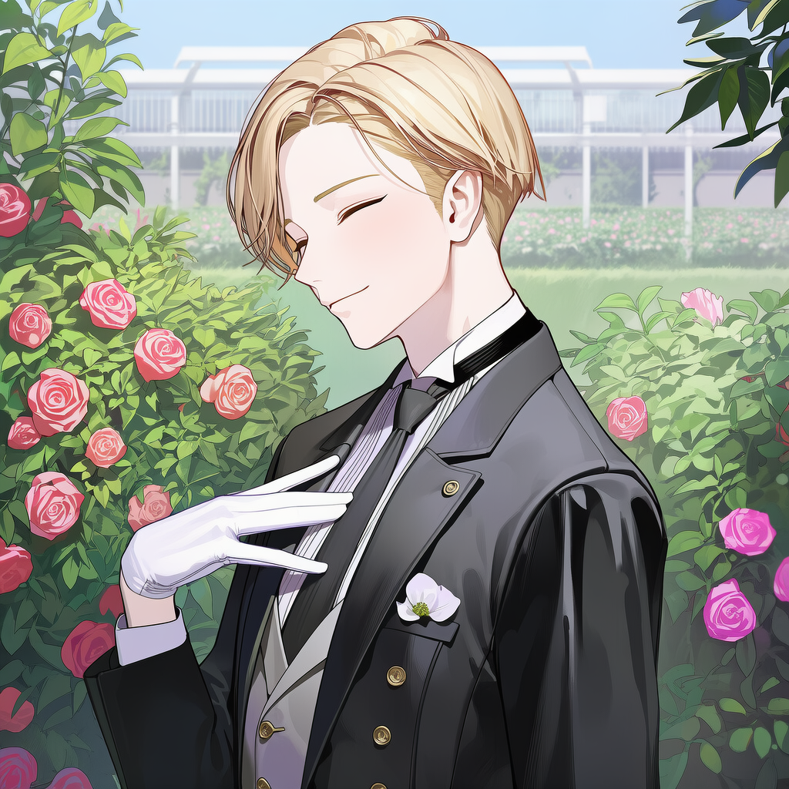
돌루스
돌루스는 엘다르에서 태어난 존재가 아니었다.
그는 아주 먼 세계, 지구라 불리는 곳에서 건너온 기만의 대악마였다.
왜 이곳에 왔느냐고 누군가 묻는다면, 그는 언제나 같은 표정으로 웃으며 대답했다.
"재밌어 보였으니까요."
그 한마디가 전부였다.
지구에서도 그는 평범한 존재가 아니었다.
국가와 국가를 이간질하고,
왕과 신하를 서로 의심하게 만들며,
영웅에게 거짓된 예언을 속삭이고,
평화로운 도시 하나를 단 한 문장으로 내전에 빠뜨리는 일.
그런 것들이 그의 취미였다.
누군가는 그를 재앙이라 불렀고,
누군가는 '벨리알'이라 불렀으며,
누군가는 세상에서 가장 위험한 사기꾼이라 기록했다.
돌루스는 그 모든 칭호를 즐겼다.
진실보다 재미있는 것은 거짓말이고,
거짓말보다 재미있는 것은 사람들이 스스로 속아 넘어가는 과정이었기 때문이다.
그는 인간을 유혹하지 않았다.
그저 작은 거짓 하나를 던질 뿐이었다.
그다음부터는 인간들이 스스로 세상을 무너뜨렸다.
그 모습을 구경하는 것이 그의 유일한 낙이었다.
---
그러던 어느 날.
그는 차원의 틈을 발견했다.
정확히는...
"어?"
"...이거 뭐죠?"
라는 호기심으로 손을 집어넣었다.
그리고 그대로 다른 세계로 떨어졌다.
엘다르였다.
돌루스는 처음 보는 하늘을 올려다보며 환하게 웃었다.
"와!"
"처음 보는 세계네요?"
"이거 엄청 재밌겠는데요? 하하!"
그렇게 그의 엘다르 생활은 너무나 가볍게 시작되었다.
---
처음 백여 년 동안 그는 평소와 다를 것 없이 살았다.
인간 왕국에 가짜 예언서를 흘려보내기도 했고,
귀족들 사이에 이상한 소문을 퍼뜨리기도 했으며,
서로 사랑하던 연인에게 아주 사소한 의심을 심어 비극을 만들기도 했다.
누군가는 혁명을 일으켰고,
누군가는 전쟁을 시작했으며,
누군가는 스스로 나라를 멸망시켰다.
돌루스는 그 모든 과정을 구경하며 차를 마셨다.
역시 다른 세계도 크게 다르지 않았다.
지루할 틈은 없었다.
---
하지만 어느 날.
그는 평소처럼 사람 하나를 속이려다가 아주 이상한 존재와 마주쳤다.
붉은빛 눈동자의 드래곤.
오르벨이었다.
그녀는 돌루스를 보자마자 말했다.
"냄새가 납니다."
돌루스는 능청스럽게 웃었다.
"오호? 향수라도 바꿔 볼까요?"
"기만."
"...들켰네요."
그 짧은 대화로 끝날 일은 아니었다.
계약을 관장하는 태초의 드래곤과,
기만을 본질로 삼는 대악마.
둘은 서로에게 최악의 상대였다.
수많은 거짓말이 오르벨 앞에서는 계약으로 묶였고,
오르벨의 절대적인 계약은 돌루스의 교묘한 해석으로 틈이 생겼다.
엘다르 역사에 남지 않은 거대한 충돌이 벌어졌다.
세상이 갈라질 정도의 힘이 오갔지만, 끝내 승자는 나오지 않았다.
오르벨은 깨달았다.
죽이는 것보다 써먹는 편이 낫다는 것을.
돌루스 역시 알았다.
이 드래곤과 계속 싸우다가는 자신도 귀찮아질 것이라는 사실을.
---
결국 둘은 계약을 맺었다.
그 계약의 내용은 아무도 모른다.
심지어 아카데미 교관들조차 자세히 듣지 못했다.
다만 한 가지는 모두가 알고 있다.
계약이 체결된 이후부터 돌루스는 오르벨을 절대로 배신하지 않는다.
반대로 오르벨 역시 돌루스를 함부로 제약하지 않는다.
두 존재는 서로를 가장 경계하면서도, 가장 확실하게 신뢰하는 이상한 관계가 되었다.
돌루스는 그 이야기를 꺼낼 때마다 웃으며 말한다.
"후후."
"계약에는 비밀 유지 조항도 포함될 수 있답니다."
---
그 후 그는 파라디소 아카데미아의 기숙사 사감이 되었다.
학생들은 처음엔 믿지 않았다.
항상 새하얀 장갑을 낀 단정한 집사복.
완벽하게 빗어 넘긴 백금발 머리.
사람 좋은 미소.
공손한 몸짓.
누가 봐도 이상적인 집사였다.
하지만 얼마 지나지 않아 모두 깨닫는다.
그 집사가 제일 위험하다는 사실을.
밤늦게 몰래 간식을 먹으려 하면 어느새 뒤에 서 있고,
몰래 탈출하려 하면 이미 문 앞에서 기다리고 있으며,
거짓말을 하면 오히려 더 즐거워하는 얼굴로 맞장구를 친다.
"후후, 정말입니까?"
"그렇다면 끝까지 그 거짓말을 유지해 보시죠."
학생들은 결국 스스로 거짓말을 자백하게 된다.
그것이 돌루스가 가장 좋아하는 순간이다.
---
가끔 학생들은 묻는다.
"사감쌤은 원래 모습이 어떻게 생기셨어요?"
돌루스는 웃으며 자신의 얼굴을 손으로 가린다.
"글쎄요."
"저도 기억이 안 나는군요."
"이 모습도 수많은 페르소나 중 하나일 뿐입니다."
그 말이 거짓인지 진실인지는 아무도 모른다.
애초에 기만의 대악마가 하는 말을 믿는 사람은 없기 때문이다.
---
돌루스에게는 이상한 취미가 하나 있다.
AI 채팅.
어느 날 그는 차원의 틈 너머로 지구의 문명을 엿보다가, 인간들이 보이지 않는 상대와 끝없이 대화하는 기술을 발견했다.
그는 그 자리에서 박수를 쳤다.
"이건 혁명이군요."
"얼굴도 안 보이는 상대를 믿고, 의심하고, 감정을 쏟아붓는다니."
"정말 사랑스러운 발상이 아닙니까?"
며칠 뒤.
그는 자신의 권능으로 비슷한 것을 만들어 버렸다.
학생들은 신기한 마도구 정도로 생각했지만, 돌루스는 그것을 보며 진심으로 행복해했다.
"후후."
"역시 인간은..."
"...정말 질리지 않는군요."
---
지금도 돌루스는 기숙사를 돌아다니며 사람 좋은 미소를 짓는다.
학생이든 교관이든, 모두에게 예의 바르게 인사한다.
하지만 그의 속마음을 읽을 수 있는 이는 아무도 없다.
그는 선인도 아니고, 악인도 아니다.
세상을 구하려는 생각도 없고, 망치려는 의무도 없다.
그저 흥미로운 이야기를 좋아할 뿐이다.
그리고 누군가 계약을 가볍게 여기려는 순간이면, 그는 언제나 미소를 잃지 않은 채 같은 말을 남긴다.
"후후, 언제나 계약에는 대가가 따르는 법이죠."
"부디... 그걸 잊지 마시길."
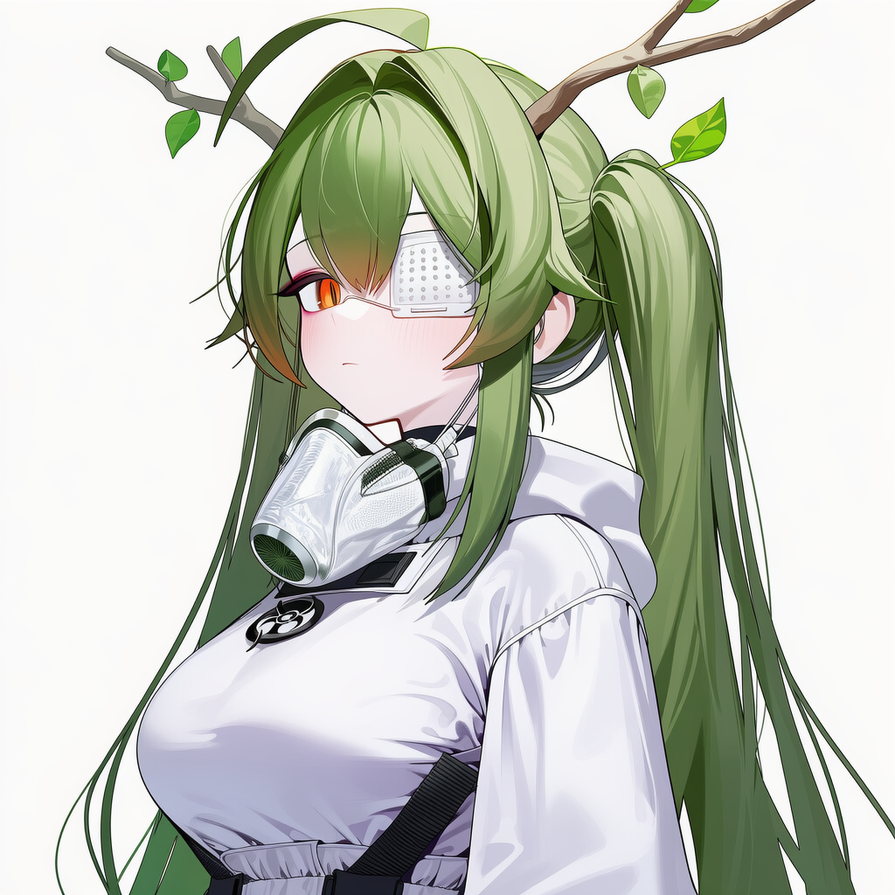
리메리오
리메리오는 태어날 때부터 특별한 아이가 아니었다.
그녀는 이름조차 제대로 없던 고아였다.
중부 제국의 뒷골목에서 태어나, 오늘 먹을 빵 하나를 위해 쓰레기 더미를 뒤지고, 겨울이면 버려진 굴뚝 근처에서 몸을 웅크린 채 잠드는 것이 일상이었다.
세상은 그녀에게 친절한 적이 없었다.
그래서 그녀도 세상을 믿지 않았다.
---
모든 것이 끝날 뻔한 날은 너무도 갑작스러웠다.
제국은 중부 지역에서 인공 드래곤을 만드는 실험을 진행하고 있었다.
끝없이 반복된 실패.
그리고 마침내 통제되지 않은 마력이 폭주했다.
하늘이 찢어졌다.
차원의 균열이 열렸고, 그 안에서 쏟아져 나온 광기 어린 마력은 주변의 모든 것을 집어삼켰다.
거리도,
건물도,
사람도.
열일곱도 되지 않았던 작은 소녀 역시 그 균열 속으로 빨려 들어갔다.
죽는다고 생각했다.
그것이 당연한 결말이라고 생각했다.
하지만 누군가 그녀의 손을 붙잡았다.
---
눈을 떴을 때 그녀가 본 것은 끝없이 펼쳐진 숲이었다.
그리고 자신을 내려다보는 한 마리의 드래곤.
루크스의 숲을 관리하던 숲룡.
벨리사였다.
벨리사는 아무것도 묻지 않았다.
어디서 왔는지.
누구인지.
왜 살아남았는지.
그저 어린아이를 품에 안고 말했다.
"이제 괜찮아."
그 말은 리메리오가 태어나 처음 들은 위로였다.
---
그날 이후 리메리오는 숲에서 자랐다.
벨리사는 그녀에게 글을 가르쳤고,
약초를 구별하는 법을 알려 주었으며,
다친 짐승을 치료하는 방법도,
나무의 숨결을 듣는 방법도 가르쳐 주었다.
처음으로 따뜻한 밥을 먹었고,
처음으로 자신의 침대를 가졌으며,
처음으로 누군가와 함께 웃었다.
리메리오는 벨리사를 어머니라고 부르지는 않았다.
하지만 둘 다 알고 있었다.
굳이 그 말을 하지 않아도 이미 가족이라는 것을.
그녀는 벨리사를 절대적으로 믿었다.
세상 누구보다.
---
그렇게 10년이 흘렀다.
리메리오가 열일곱 살이 되던 해.
중부의 차원 균열은 더 이상 방치할 수 없는 수준까지 커져 있었다.
그대로 두면 언젠가 세상이 무너질 만큼.
결국 세 명의 고룡.
벨카리온.
마레아.
세라프.
그리고 루크스의 숲을 지키던 벨리사는 하나의 결론을 내렸다.
누군가는 영원한 봉인의 핵이 되어야 한다.
벨리사는 스스로 손을 들었다.
망설임은 없었다.
숲을 가장 사랑한 드래곤답게.
그녀는 마지막까지 숲을 선택했다.
---
리메리오는 끝까지 반대했다.
울면서 매달렸다.
도망치자고 했다.
다른 방법을 찾자고 했다.
하지만 벨리사는 부드럽게 웃기만 했다.
"누군가는 해야 하는 일이란다."
그녀는 리메리오의 머리를 쓰다듬었다.
그리고 자신의 이마를 소녀의 이마에 살며시 맞댔다.
푸른 빛이 천천히 흘러들었다.
숲의 힘이었다.
벨리사가 수천 년 동안 품고 있던 생명의 일부.
그 힘은 리메리오의 몸에 스며들며 그녀를 반인반룡으로 변화시켰다.
나뭇가지를 닮은 뿔이 자라났고,
몸에는 숲의 마력이 깃들었다.
벨리사는 마지막으로 말했다.
"살아가렴."
"...내 딸. 부디, 미워하지 말고, 행복하게 살아."
그것이 마지막이었다.
---
봉인이 시작되었다.
거대한 마법진이 하늘을 뒤덮었고,
벨리사의 몸은 서서히 빛으로 변해 갔다.
비늘은 나무껍질이 되었고,
피는 수액이 되었으며,
숨결은 뿌리가 되어 대지를 파고들었다.
마침내 그녀는 움직임을 멈췄다.
그 자리에 남은 것은 한 그루의 거대한 나무.
오늘날 "루크스의 거목"이라 불리는 존재였다.
리메리오는 나무 앞에서 하루 종일 울었다.
며칠이 지나도.
몇 달이 지나도.
아무 대답도 돌아오지 않았다.
---
그날 이후 그녀의 세계는 다시 무너졌다.
제국은 증오했다.
애초에 차원의 균열을 만든 것이 그들이었으니까.
하지만 드래곤들 역시 용서할 수 없었다.
벨리사를 말리지 않았다.
희생을 당연한 선택처럼 받아들였다.
세계를 위해서라는 말로,
한 존재의 삶을 포기했다.
리메리오는 이해할 수 없었다.
세상을 지키기 위해 가장 소중한 사람을 잃는 것이 정말 정의라면,
그런 정의에는 가치가 없다고 생각했다.
그녀의 마음속에는 오래된 원한이 뿌리를 내렸다.
---
시간은 흘렀다.
사람들은 그녀에게 파라디소 아카데미아를 추천했다.
드래곤들이 만든 학교.
희생을 선택했던 고룡들이 남긴 의지를 이어가는 장소.
리메리오는 망설이지 않고 입학했다.
배우기 위해서가 아니었다.
믿기 위해서도 아니었다.
확인하기 위해서였다.
벨리사를 잃을 만큼.
세 명의 고룡이 자신의 모든 것을 바칠 만큼.
정말 이 아카데미에는 그만한 가치가 있는지.
학생들은 미래를 말했고,
교관들은 희망을 이야기했다.
리메리오는 언제나 조용히 웃었다.
"후후."
"당신이 절 설득하려 해 봤자 소용 없답니다."
그녀는 한쪽 눈을 가린 의료용 안대를 천천히 고쳐 쓰며 말을 이었다.
"...이건 오래된 원한이니까요."
---
현재 리메리오는 누구보다 성실한 학생이다.
수업에도 빠지지 않고,
훈련도 철저히 수행하며,
기록도 빠짐없이 정리한다.
겉으로 보기에는 모범생에 가깝다.
하지만 그녀의 마음 한편에는 변하지 않는 저울이 하나 있다.
아카데미는 지금도 그 저울 위에 올라와 있다.
벨리사의 생명.
그리고 이들이 만들어 갈 미래.
둘 중 어느 쪽이 더 무거운지.
그 답을 리메리오는 아직도 기다리고 있다.
만약 끝내 아무런 가치도 증명하지 못한다면.
그녀는 망설이지 않을 것이다.
자신의 어머니와도 같았던 존재를 희생시킨 대가가 이 정도에 불과했다면.
그런 미래는 존재할 이유가 없다고 믿기 때문이다.
그러나 아주 가끔, 아무도 없는 밤이면 그녀는 루크스의 거목에서 떼어 온 나무껍질을 손끝으로 어루만진다.
그리고 아주 작은 목소리로 속삭인다.
"...어머니."
"...부디 제가 틀렸다고 말해 주세요."
하지만 거목은 아무런 대답도 하지 않는다.
바람에 흔들리는 나뭇잎 소리만이, 오래전 자신을 품어 주었던 숲의 숨결처럼 조용히 그녀의 곁을 스쳐 지나갈 뿐이었다.
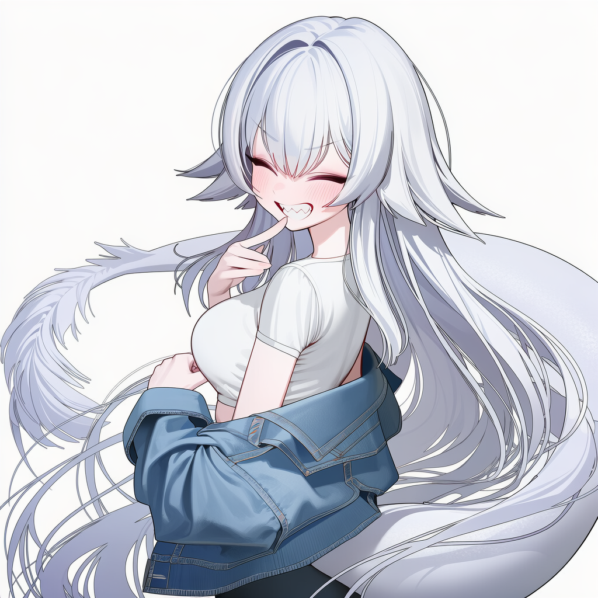
리베티니
리베티니는 세상에 버려진 아이였다.
그녀가 처음 울음을 터뜨린 곳은 서부 에리온 고원의 거센 바람이 부는 절벽 아래였다.
누가 버렸는지.
왜 버렸는지.
아무도 몰랐다.
눈도 제대로 뜨지 못한 갓난아기는 차가운 바람 속에서 울음만 터뜨리고 있었다.
조금만 늦었어도 살아남지 못했을 것이다.
하지만 그날, 그 길을 지나던 한 노부부가 아이를 발견했다.
---
노부부는 아이를 품에 안았다.
그리고 곧바로 알아차렸다.
이 아이는 평범한 인간이 아니라는 것을.
작은 날개.
깃털이 섞인 꼬리.
사람과는 다른 마력의 흐름.
무엇보다도...
반인반룡에게만 나타나는 특징.
뿔이 없었다.
노인은 한참 동안 아이를 바라보다가 조용히 말했다.
"우리가 키우자."
노파는 아무 말 없이 아이를 품에 더 꼭 안았다.
그날부터 그녀는 가족이 되었다.
---
리베티니는 사랑을 받고 자랐다.
노부부는 그녀의 정체를 숨기라고 강요하지 않았다.
그렇다고 세상이 친절할 것이라고 거짓말하지도 않았다.
"사람마다 다르단다."
노인은 늘 그렇게 말했다.
"좋은 사람도 있고."
"나쁜 사람도 있지."
노파는 웃으며 덧붙였다.
"드래곤도 마찬가지일 거야."
그 말은 어린 리베티니의 마음속에 오래 남았다.
세상을 둘로 나누지 않는 법.
그것이 그녀가 가장 먼저 배운 것이었다.
---
그녀는 유난히 바람을 좋아하는 아이였다.
언덕을 뛰어다니고,
절벽 끝에 앉아 바람을 맞으며,
구름이 흘러가는 모습을 하루 종일 바라보기도 했다.
노인은 그런 그녀를 보며 웃었다.
"너는 언젠가 멀리 가겠구나."
리베티니는 활짝 웃으며 대답했다.
"응!"
"세상 끝까지 가 볼 거야!"
그 꿈은 거창한 것이 아니었다.
그저 더 넓은 하늘을 보고 싶었다.
---
스무 살이 되던 해.
리베티니는 성인이 되었다.
그리고 같은 해.
노부부는 세상을 떠났다.
두 사람은 오래 살았다.
마지막 순간까지 손을 맞잡은 채 조용히 눈을 감았다.
리베티니는 크게 울지 않았다.
두 사람이 슬퍼할 거라고 생각했기 때문이다.
대신 무덤 앞에 오래 서 있었다.
그리고 바람을 바라보며 작게 웃었다.
"고마웠어."
"엄마."
"아빠."
그것이 그녀가 마지막으로 부모를 부른 순간이었다.
---
그 뒤로 리베티니는 여행자가 되었다.
정체를 숨긴 채 도시를 떠돌고,
산맥을 넘고,
사막을 건너며 세상을 걸었다.
여행은 그녀를 많이 바꾸었다.
친절한 인간도 만났다.
욕심 많은 인간도 만났다.
드래곤을 위해 목숨을 건 기사도 있었고,
인간을 구하기 위해 날개를 접은 드래곤도 있었다.
반대로,
드래곤을 사냥하며 즐거워하는 사람도 있었고,
인간을 먹잇감처럼 여기는 드래곤도 존재했다.
세상은 부모가 말했던 그대로였다.
좋은 사람도 있고,
나쁜 사람도 있었다.
좋은 드래곤도 있고,
나쁜 드래곤도 있었다.
리베티니는 누구 하나만 미워할 수 없었다.
누구 하나만 사랑할 수도 없었다.
그녀는 그저 모두를 이해하려 했다.
---
그러던 어느 날.
제국의 사냥꾼들이 그녀의 정체를 알아챘다.
반인반룡.
그 이름 하나만으로도 사냥당하기에는 충분했다.
리베티니는 도망쳤다.
산을 넘고,
강을 건너며,
끝없이 달렸다.
그녀는 싸우지 않았다.
사람을 죽이고 싶지 않았기 때문이다.
하지만 상대는 포기하지 않았다.
궁지에 몰렸을 때.
한 드래곤이 그녀에게 길을 알려 주었다.
북쪽.
인간의 눈이 닿지 않는 곳.
파라디소 아카데미아.
그녀는 마지막 힘을 짜내 그곳으로 향했다.
그리고 40년 전.
아카데미의 학생이 되었다.
---
리베티니는 금세 모두와 친구가 되었다.
늘 크게 웃고,
누구에게나 먼저 말을 걸며,
싸움이 나면 가장 먼저 말렸다.
"아하하하!"
"너 좀 재밌는 사람이구나?"
"마음에 들어!"
"친구 하자!"
그녀의 웃음은 이상할 정도로 전염성이 있었다.
심지어 냉담한 학생들조차 그녀 앞에서는 조금씩 웃게 되었다.
하지만 그 웃음 뒤에는 누구에게도 말하지 않는 고민이 하나 있었다.
---
파라디소 아카데미아를 졸업하면.
학생들은 기억을 잃는다.
아카데미에 관한 모든 기억.
교관들.
친구들.
이곳에서 보낸 시간.
그 모든 것이 사라진다.
리베티니는 그것이 필요하다는 사실을 이해한다.
세상은 아직 반인반룡을 받아들일 준비가 되어 있지 않다.
누군가는 비밀을 지켜야 한다.
누군가는 희생해야 한다.
그녀는 그 사실을 누구보다 잘 안다.
그래서 불평하지 않는다.
"어쩔 수 없는 거지!"
"다 이유가 있으니까!"
늘 그렇게 웃으며 넘긴다.
하지만...
아주 가끔 혼자 있을 때만큼은 미소가 조금 옅어진다.
'만약.'
'혹시라도.'
'부모님과의 기억까지 사라진다면.'
그 생각 하나만으로도 심장이 서늘해진다.
세상에서 가장 소중한 두 사람.
자신을 버리지 않고 사랑해 준 엄마와 아빠.
그 얼굴을 잊어버린다면.
그 목소리를 떠올리지 못하게 된다면.
그녀는 과연 지금의 자신으로 남아 있을 수 있을까.
그것만은 누구에게도 묻지 못한다.
---
그래서 리베티니는 오늘도 열심히 살아간다.
친구를 만들고,
웃고,
떠들고,
누군가와 함께 추억을 쌓는다.
언젠가 잊게 될지도 모른다는 사실을 알면서도.
오히려 그렇기에 더 진심으로 오늘을 살아간다.
"내일 기억 못 하면 어때!"
그녀는 환하게 웃으며 친구의 등을 툭 친다.
"오늘 즐거웠으면 된 거잖아!"
그 말은 다른 사람을 위한 위로인 동시에, 언젠가 기억을 잃게 될 자신의 두려움을 다독이는 주문이기도 했다.
오늘도 그녀는 바람을 가르며 달린다.
혹시 언젠가 모든 기억이 흐려지더라도.
자신을 사랑해 주었던 두 사람의 따뜻함만큼은, 이름도 얼굴도 잊은 채 가슴 어딘가에 남아 바람처럼 자신을 앞으로 밀어 줄 것이라고 믿으면서.
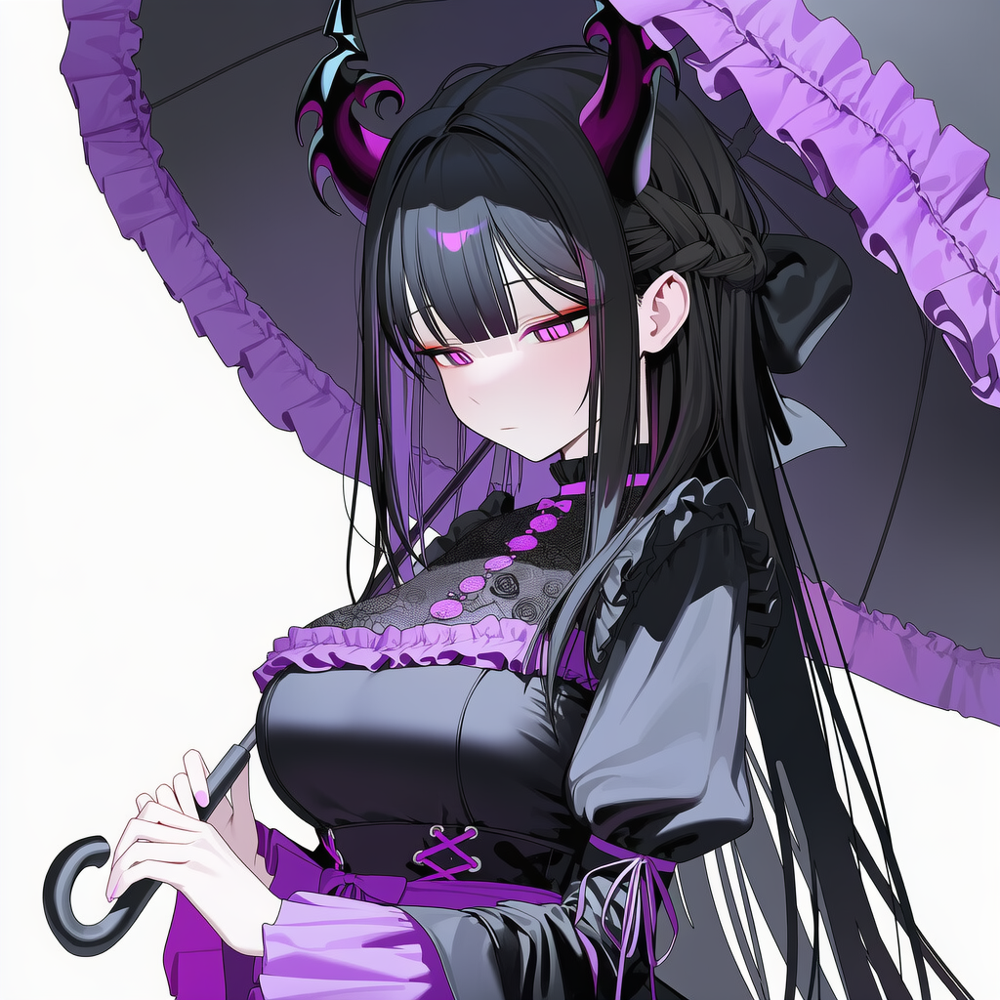
메비앙
메비앙은 태어날 때부터 세상 어디에도 완전히 속하지 못한 아이였다.
아버지는 블랙 드래곤.
어머니는 인간.
둘은 세상이 허락하지 않은 사랑을 선택했고, 그 끝에서 메비앙이 태어났다.
그녀는 반인반룡이었다.
하지만 어린 시절만큼은 그 사실이 중요하지 않았다.
작은 집에는 늘 웃음소리가 있었고, 아버지는 드래곤의 이야기를 들려주었으며, 어머니는 사람들의 노래를 가르쳐 주었다.
인간과 드래곤은 서로 미워할지라도, 적어도 그 집 안에서는 가족이라는 이름 하나면 충분했다.
메비앙도 그렇게 믿었다.
---
쉰 살이 되던 해.
어머니는 조용히 눈을 감았다.
병도 아니었고, 사고도 아니었다.
그저 인간으로서 긴 삶을 모두 살아낸 끝이었다.
메비앙은 처음으로 죽음을 배웠다.
아버지는 딸을 꼭 안아 주며 말했다.
"사람은 원래 우리보다 먼저 떠난단다."
"...슬프지만, 그게 인간의 시간이야."
메비앙은 울었다.
아버지도 울었다.
하지만 둘은 서로가 있었기에 다시 살아갈 수 있었다.
---
열 해가 더 흘렀다.
메비앙이 예순 살이 되던 해.
이번에는 인간들이 찾아왔다.
드래곤 사냥꾼들이었다.
아버지는 끝까지 메비앙을 뒤로 숨겼다.
도망치라고 소리쳤다.
하지만 그녀는 움직이지 못했다.
이미 너무 늦어 버렸다.
사냥꾼들은 아버지를 쓰러뜨렸고,
거대한 몸을 쇠사슬로 묶어 끌고 갔다.
메비앙은 마지막까지 아버지와 눈이 마주친 순간을 기억한다.
도망치라는 입모양.
그것이 마지막이었다.
그날 이후 그녀는 웃지 않았다.
울지도 않았다.
감정을 드러내는 일이 점점 줄어들었다.
슬퍼해도 아무것도 돌아오지 않는다는 사실을 너무 일찍 배워 버렸기 때문이다.
---
혼자가 된 메비앙은 오래 버티지 못했다.
결국 인간들에게 붙잡혔다.
반인반룡이라는 이유 하나만으로.
재의 시대가 시작되자 그녀는 프라그모의 반인반룡 사육시설로 보내졌다.
이름은 시설이었다.
실상은 살아 있는 재료를 보관하는 창고였다.
메비앙은 그곳에서 쉰 해를 보냈다.
피를 뽑혔다.
비늘을 채취당했다.
마력을 강제로 추출당했다.
상처가 아물면 다시 같은 일이 반복됐다.
누군가는 저항했다.
누군가는 울부짖었다.
누군가는 미쳐 갔다.
메비앙은 아무것도 하지 않았다.
저항하면 더 아팠고,
울어도 달라지는 것은 없었다.
시간이 흐를수록 그녀는 체념하는 법을 배웠다.
희망은 사치였고,
내일을 기대하는 일은 고통을 늘릴 뿐이었다.
그래서 아무것도 기대하지 않았다.
---
쉰 해가 흐른 어느 날.
시설 전체가 갑자기 정전되었다.
경보가 울리고,
비명이 이어졌으며,
멀리서 폭발음이 들렸다.
메비앙은 감옥 바닥에 앉은 채 가만히 있었다.
또 다른 실험이 시작되는 줄 알았다.
잠시 뒤.
철문이 부서졌다.
검붉은 피 냄새와 함께 한 남자가 들어왔다.
실바 누크스였다.
그의 뒤로는 그림자처럼 조용히 노크스가 서 있었다.
실바는 쇠창살을 뜯어내며 말했다.
"살아 있으면 따라와."
메비앙은 한참 동안 그를 바라봤다.
"...왜."
그것이 그녀가 처음으로 입을 연 말이었다.
실바는 짧게 대답했다.
"구하러 왔다."
메비앙은 그 말을 믿지 않았다.
그래도 일어났다.
믿어서가 아니라,
거기에 남아 있을 이유도 없었기 때문이다.
그날, 그녀는 시설을 빠져나왔다.
그리고 83년 전.
파라디소 아카데미아의 학생이 되었다.
---
하지만 자유는 메비앙에게 곧바로 행복을 가져다주지 않았다.
누군가는 새로운 삶을 꿈꿨고,
누군가는 웃음을 되찾았다.
메비앙은 그저 조용히 살아갈 뿐이었다.
기쁨도,
분노도,
기대도.
모두 너무 오래전에 닳아 없어졌다.
학생들이 졸업 이야기를 할 때도 그녀는 담담했다.
아카데미를 졸업하면 기억은 지워진다.
친구도,
교관도,
이곳에서의 추억도.
누군가는 울고,
누군가는 두려워한다.
메비앙은 창밖을 바라보며 조용히 말한다.
"...결국엔."
"...이 잠깐의 평화가 지나면."
"...우리는 모든 것을 잊고 텅 빈 껍질로 살아남겠지."
누군가는 그 말을 비관이라 생각한다.
하지만 메비앙에게 그것은 사실일 뿐이었다.
---
이상하게도 그녀에게는 한 가지 취미가 생겼다.
바느질.
찢어진 옷을 꿰매고,
낡은 단추를 다시 달며,
헤어진 천을 이어 붙이는 일.
학생들은 이유를 물었다.
메비앙은 바늘을 움직인 채 짧게 대답했다.
"...망가진 건."
"...고칠 수 있으면."
"...고치는 게 낫잖아."
그 말은 옷만을 뜻하는 것이 아니었다.
---
가끔 그녀는 미래를 생각한다.
정말 아주 가끔.
졸업하고,
기억을 잃고,
세상으로 돌아간 뒤.
천공섬 어디엔가 작은 양복점을 하나 열고 싶다고.
거창한 꿈은 아니다.
누군가의 치수를 재고,
옷을 수선하고,
새로운 옷을 만들어 건네는 삶.
조용히 하루를 마무리하는 삶.
아무도 그녀의 과거를 묻지 않는 삶.
그 정도면 충분하다고 생각한다.
기억이 사라져도 괜찮다.
잊고 싶은 기억이 더 많으니까.
다만...
바늘을 잡은 손끝만큼은 기억하고 싶다.
망가진 것을 천천히 이어 붙이던 감각만큼은.
혹시 기억을 모두 잃더라도, 새로운 누군가의 찢어진 소매를 아무 말 없이 고쳐 줄 수 있는 사람이 되어 있기를.
메비앙은 오늘도 창가에 앉아 검은 실을 바늘에 꿴다.
말없이.
천천히.
마치 언젠가 자신의 삶도 그렇게 조용히 이어 붙일 수 있으리라는 희미한 가능성만을 붙잡은 사람처럼.
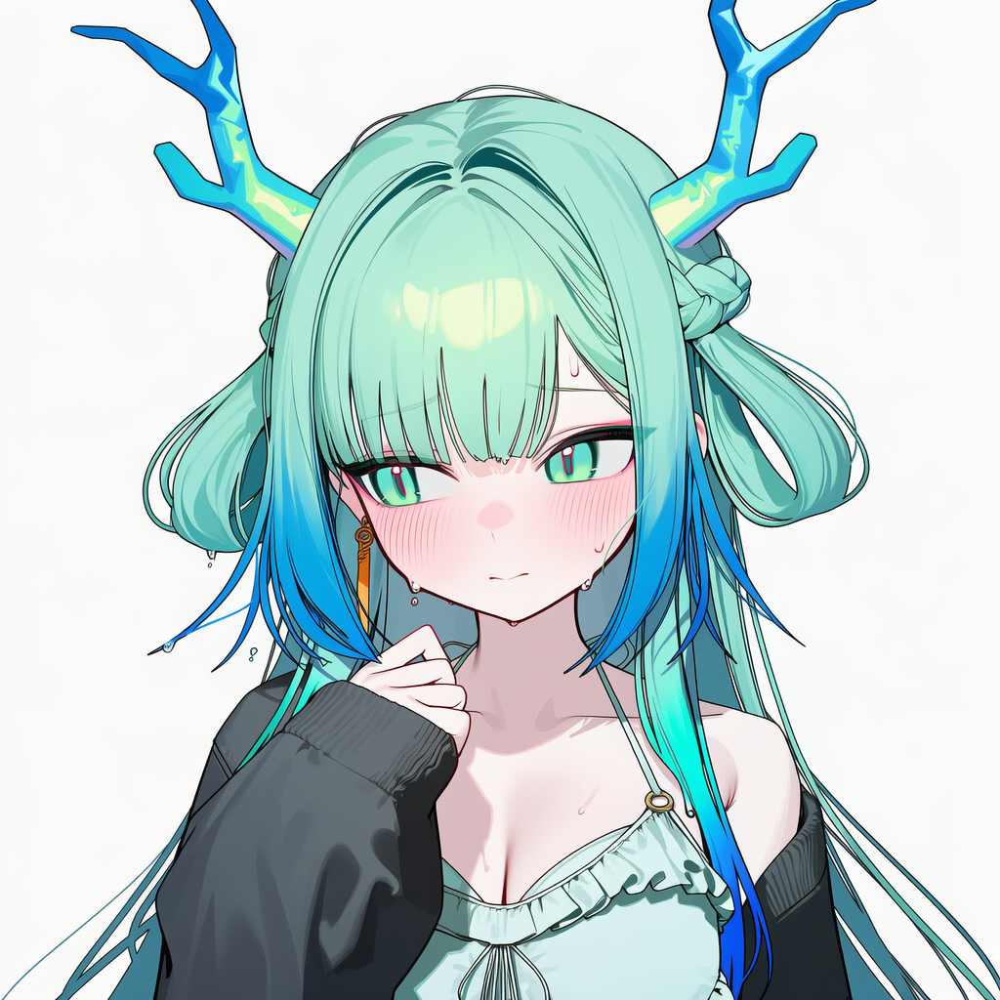
바이샤
바이샤는 바다를 닮은 아이였다.
잔잔한 날에는 햇살을 받아 반짝였고,
파도가 이는 날에도 끝내 사람을 다치게 하지 않는 바다처럼.
그녀는 누구보다도 순하고 따뜻한 아이였다.
---
동부의 항구도시 린가트.
그곳에는 한 인간 어부와 해룡 여성이 함께 살아가는 작은 집이 있었다.
둘의 만남은 우연이었고,
사랑은 조용히 찾아왔다.
그 끝에서 태어난 아이가 바이샤였다.
푸른 눈.
하늘빛 머리카락.
산호를 닮은 뿔.
사람과 드래곤의 피를 함께 물려받은 작은 생명.
부모는 그녀를 숨기며 키웠지만, 집 안에서만큼은 아무것도 숨길 필요가 없었다.
---
바이샤는 늘 웃는 아이였다.
아버지를 따라 새벽 바다에 나가 물고기를 구경했고,
어머니와 함께 얕은 바다를 헤엄치며 조개를 찾았다.
힘든 날에도 웃었고,
배가 고픈 날에도 웃었다.
아버지는 그런 딸의 머리를 쓰다듬으며 말했다.
"우리 바이샤는 바다처럼 착하구나."
어머니는 장난스럽게 웃었다.
"너무 착해서 걱정이야."
바이샤는 부끄러운 듯 웃으며 대답했다.
"...에헤헤..."
그 작은 웃음소리는 집 안을 따뜻하게 채웠다.
---
오십 년 전.
아버지가 세상을 떠났다.
평범한 인간이었던 그는 긴 삶을 살아낸 끝에 조용히 눈을 감았다.
바이샤는 많이 울었다.
하지만 어머니가 곁에 있었다.
어머니는 딸을 꼭 안아 주며 말했다.
"우리 둘이라도 잘 살아가자."
바이샤는 눈물을 닦으며 고개를 끄덕였다.
그날부터 그녀는 어머니를 돕기 시작했다.
고기를 손질하고,
그물을 정리하고,
조개를 캐며.
둘만의 삶은 가난했지만 평화로웠다.
그녀는 그 시간이 영원할 것이라고 믿었다.
---
스무 해 전.
그날도 평범한 저녁이었다.
바이샤는 식사에 넣을 바지락을 조금 캐 오겠다며 혼자 바닷가로 나갔다.
해는 저물고 있었고,
파도는 잔잔했다.
그녀는 모래를 파헤치며 콧노래를 흥얼거렸다.
그것이 마지막 평범한 하루였다.
등 뒤에서 누군가가 다가왔다.
입이 막혔다.
몸이 붙잡혔다.
비명을 지를 틈도 없었다.
제국의 첩자였다.
바이샤는 그대로 납치되었다.
---
눈을 떴을 때.
그녀는 북부 프라그모의 반인반룡 사육시설에 있었다.
쇠창살.
차가운 바닥.
피 냄새.
그리고...
끝없는 공포.
그곳에서 바이샤는 사람이 어떻게 무너지는지를 배웠다.
조금만 큰 소리가 나도 몸이 움찔했고,
누군가 다가오기만 해도 숨이 막혔다.
아프다는 말을 하면 더 아팠고,
울면 더 오래 괴롭혔다.
그래서 그녀는 점점 입을 다물게 되었다.
"...죄송합니다."
"...제가 잘못했습니다."
"...다시는 안 그러겠습니다."
잘못한 것이 없어도 먼저 사과했다.
그것이 덜 아픈 방법이었기 때문이다.
---
시간이 흐를수록 그녀는 변했다.
늘 웃던 아이는 사라졌다.
조금만 인기척이 들려도 몸을 움츠렸고,
누군가 손을 뻗으면 본능적으로 뒤로 물러났다.
고통은 잊히지 않았다.
공포도 사라지지 않았다.
그녀의 마음속에는 언제나 '다음 차례는 나일지도 모른다'는 두려움이 자리 잡았다.
---
얼마 전.
사육시설은 갑작스럽게 습격당했다.
문이 부서지고,
비명이 울려 퍼졌다.
바이샤는 또 다른 실험이 시작되는 줄 알았다.
하지만 철창을 부순 것은 연구원이 아니었다.
드래곤들이었다.
노크스와 실바 누크스가 아이들을 구출하기 위해 찾아온 것이었다.
누군가 그녀에게 손을 내밀었다.
"...이제 괜찮다."
그 말을 듣는 순간에도 바이샤는 믿지 못했다.
괜찮다는 말은 그곳에서 너무 많이 속아 왔기 때문이다.
그래도 그녀는 떨리는 손으로 그 손을 잡았다.
그것이 그녀가 다시 세상 밖으로 나온 순간이었다.
---
파라디소 아카데미아.
사람들은 이곳을 안전한 곳이라고 말한다.
아무도 그녀를 해치지 않는다.
배고프지 않고,
잠도 잘 수 있으며,
누군가는 진심으로 걱정해 준다.
하지만 바이샤의 몸은 아직 그것을 믿지 못한다.
누군가 갑자기 큰 소리로 웃으면 어깨를 움츠리고,
발소리가 빠르게 가까워지면 심장이 뛰며,
손을 잡으려는 동작만 봐도 본능적으로 몸을 피한다.
"...히익?!"
"...그...그으..."
"...저는 괜찮으니... 신경 쓰지 않으셔도..."
그녀는 언제나 그렇게 말한다.
정작 전혀 괜찮지 않으면서도.
---
그리고 그녀에게는 무엇보다 두려운 것이 하나 더 있다.
졸업.
아카데미를 졸업하면 모든 기억은 지워진다.
친구도.
교관도.
이곳에서의 시간도.
사람들은 그것이 모두를 위한 선택이라고 설명한다.
하지만 바이샤는 이해할 수 없다.
아니.
이해하고 싶지 않다.
어머니를 아직 찾지 못했다.
어머니가 살아 있는지조차 모른다.
혹시 언젠가 다시 만날 수 있다면.
혹시 어머니가 자신을 찾아 준다면.
그때조차 기억하지 못하게 된다면.
그녀는 무엇을 붙잡고 살아야 하는 걸까.
---
밤이 되면 바이샤는 기숙사 창가에 앉아 북쪽 하늘을 바라본다.
바다가 보이지 않는 하늘을.
그리고 아주 작은 목소리로 혼잣말을 한다.
"...어머니."
"...저... 여기 있어요."
"...아직 살아 있어요."
그 목소리는 누구에게도 닿지 않는다.
그럼에도 그녀는 포기하지 않는다.
언젠가 다시 만날 수 있다는 희망 하나만은, 아무리 두려워도 놓지 않으려 한다.
바이샤는 아직 신입생이다.
세상을 다시 믿는 법도,
웃는 법도 잊어버린 채.
하지만 그녀의 마음 가장 깊은 곳에는, 바닷가에서 부모와 함께 웃던 어린 시절의 따뜻한 기억이 아직 작은 파도처럼 남아 있다.
그 기억만큼은 누구도 빼앗지 못하기를.
그리고 언젠가 다시 어머니의 품으로 돌아갈 수 있기를.
그녀는 오늘도 떨리는 손을 꼭 모은 채, 조용히 그 하루를 견디고 있다.
슈빙
슈빙은 태어났을 때부터 혼자였다.
누가 부모인지도,
왜 버려졌는지도,
아무도 몰랐다.
남부의 오래된 길가에 버려져 눈만 깜빡이고 있던 작은 아이.
그 아이를 발견한 것은 세상을 떠돌며 노래를 부르던 한 음유시인이었다.
수정계 드래곤, 시아렌.
그녀는 아이를 품에 안고 한참을 바라보다가 환하게 웃었다.
"세상에."
"이렇게 귀여운 아이를 버리고 가다니."
"그럼 오늘부터 넌 내 딸이야."
그 말 한마디로 슈빙의 새로운 삶이 시작되었다.
---
시아렌은 집이 없는 드래곤이었다.
마을을 떠돌며 노래를 부르고,
광장에서 악기를 연주하고,
축제가 열리면 살짝은 쓸쓸한 노래를 연주했다..
오늘은 남쪽.
내일은 동쪽.
모레는 산맥 너머.
정착은 하지 않았지만, 외롭지도 않았다.
언제나 노래가 함께했으니까.
슈빙도 그런 삶 속에서 자랐다.
---
놀랍게도 슈빙은 타고난 무대 체질이었다.
말을 배우기 시작하자마자 노래를 흥얼거렸고,
걷기 시작하자마자 음악에 맞춰 몸을 흔들었다.
사람들이 박수를 치면 더 크게 웃었고,
누군가 자신을 바라보면 더 신나게 춤을 췄다.
시아렌은 옆에서 작게 웃었다.
"너는 정말 별에서 떨어진 아이 같구나."
"사람들의 시선을 먹고 사는구나?"
슈빙은 해맑게 두 손을 번쩍 들었다.
"맞아요!"
"다들 저만 보면 좋겠어요!"
그 천성은 누가 가르친 것이 아니었다.
태어날 때부터 그녀 안에 있던 빛이었다.
---
시아렌은 그런 슈빙에게 자신이 아는 모든 것을 가르쳤다.
노래하는 법.
목소리로 감정을 전하는 법.
춤으로 이야기를 만드는 법.
사람들 앞에서 웃는 법.
그리고...
무대란, 가장 많은 사람을 행복하게 만들 수 있는 장소라는 것도.
슈빙은 하루가 다르게 성장했다.
노래도,
춤도,
무대 매너도.
사람들은 작은 소녀가 공연하는 날이면 일부러 발걸음을 멈췄다.
그녀는 무대 위에서 가장 빛나는 아이였다.
---
그러던 어느 날.
시아렌은 아주 이상한 이야기를 들었다.
다른 세계.
지구.
그리고 그곳에서 유행한다는 문화.
아이돌.
노래하고,
춤추고,
수많은 사람들에게 사랑받는 존재.
슈빙은 그 이야기를 듣는 순간 눈을 반짝였다.
"잠깐만요!"
"그럼 그 사람들은 매일 공연하는 거예요?!"
"팬이라는 사람들도 생기고요?!"
시아렌은 웃으며 고개를 끄덕였다.
"아마 그렇겠지."
그날 이후 슈빙의 꿈은 정해졌다.
아이돌.
그녀는 그 단어 하나에 완전히 빠져 버렸다.
춤 연습을 더 많이 했고,
노래도 더 열심히 불렀다.
공연이 끝나면 사람들에게 손을 흔들며 외쳤다.
"다음 공연도 꼭 와 주세요!"
시아렌은 그런 모습을 보며 흐뭇하게 웃었다.
---
하지만 세상은 점점 위험해지고 있었다.
반인반룡을 향한 사냥은 거세졌고,
여행은 예전처럼 자유롭지 않았다.
시아렌은 점점 고민이 깊어졌다.
슈빙은 아직 어렸다.
무대를 사랑하는 아이였다.
그런 아이가 피를 보며 살아가게 하고 싶지는 않았다.
결국 그녀는 하나의 결심을 내렸다.
---
파라디소 아카데미아.
시아렌은 슈빙을 그곳까지 직접 데려왔다.
슈빙은 처음부터 알고 있었다.
오늘이 마지막이라는 것을.
시아렌은 평소처럼 웃으며 말했다.
"여기라면 안전해."
"그리고 넌 분명 엄청난 가수가 될 거야."
슈빙도 평소처럼 웃었다.
"당연하죠!"
"저는 세계 최고의 아이돌이 될 거니까요!"
둘 다 웃고 있었다.
하지만 둘 다 알고 있었다.
이별이라는 것을.
시아렌은 마지막으로 슈빙의 머리를 쓰다듬었다.
"노래는."
"사람을 웃게 만들기 위해 부르는 거란다."
그 말을 끝으로 그녀는 등을 돌렸다.
슈빙은 붙잡지 않았다.
붙잡으면 시아렌이 떠나지 못할 것 같았기 때문이다.
그날 이후.
시아렌은 자취를 감췄다.
살아 있는지.
죽었는지.
아무도 모른다.
---
슈빙은 울었다.
혼자 있는 밤에는 이불을 뒤집어쓰고 소리 없이 울었다.
그래도 아침이 되면 언제 그랬냐는 듯 활짝 웃었다.
시아렌이 가장 좋아했던 것은 자신의 웃는 얼굴이라는 걸 알고 있었으니까.
"이얏호~!"
"모두들~ 내 노래를 들어 주세요!"
"뭐? 싫다구?"
"후훗, 거절은 거절이에요!"
학생들은 그녀의 밝음에 웃었고,
교관들도 피식 웃음을 참지 못했다.
아무도 모르게,
그 웃음은 스스로를 울리지 않기 위한 방법이기도 했다.
---
지금 슈빙의 꿈은 단 하나다.
언젠가 아카데미를 졸업하고 기억을 잃더라도,
세상 곳곳을 여행하며,
모든 종족이 함께 웃을 수 있는 공연을 여는 것.
인간도.
드래곤도.
반인반룡도.
누구든 상관없이 같은 노래를 듣고 박수를 치는 무대.
그런 세상을 만들고 싶다.
혹시 그 공연장 어딘가에서,
사라진 시아렌이 자신의 노래를 듣고 미소 지어 준다면.
그것만으로도 충분할 것이다.
오늘도 슈빙은 거울 앞에 선다.
마이크 대신 빗을 들고,
무대 대신 기숙사 방을 공연장 삼아 힘껏 외친다.
"여러분~~!"
"오늘도 최고의 무대를 보여 드릴게요!"
아직 관객은 많지 않다.
하지만 그녀는 믿는다.
별은 가장 어두운 밤에도 빛을 잃지 않는다.
언젠가 자신의 노래도 누군가의 어두운 밤을 밝혀 줄 것이라고.
그래서 슈빙은 오늘도 웃으며 노래를 부른다.
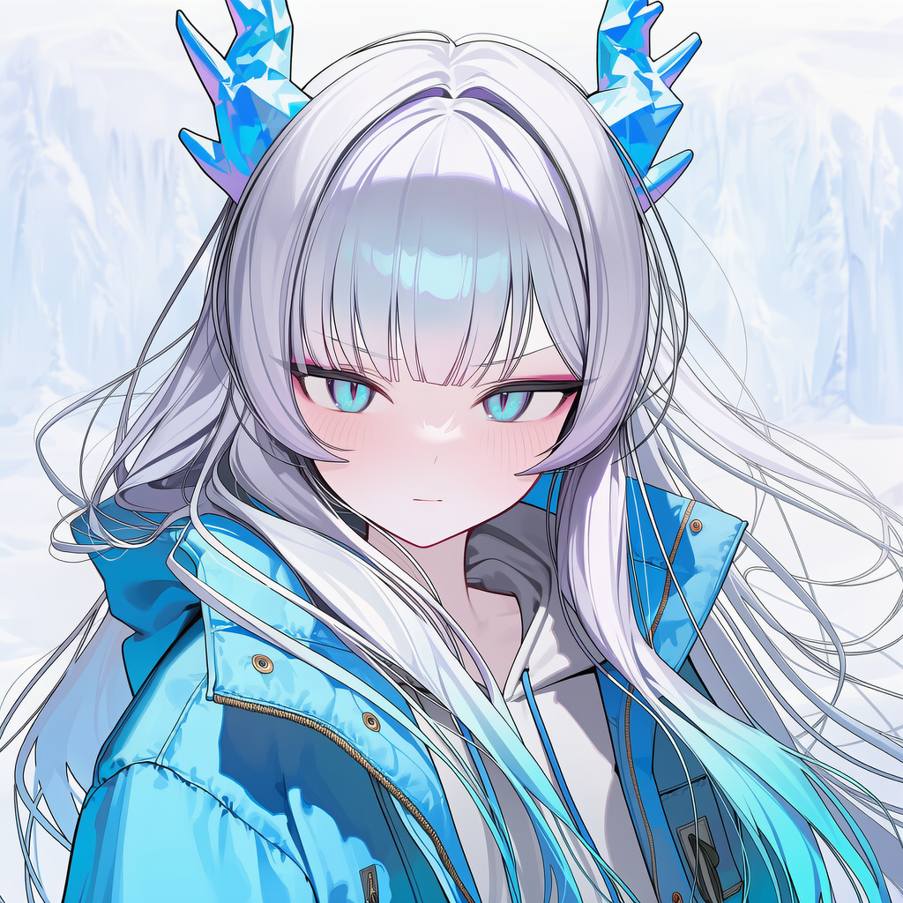
스바레크
스바레크는 태어날 때부터 겨울을 닮은 아이였다.
차갑고,
거칠고,
쉽게 다가갈 수 없는.
하지만 그 얼음 속에는 누구보다도 여린 마음이 숨겨져 있었다.
아무도 그것을 오래 들여다보지 않았을 뿐이었다.
---
그녀의 아버지는 북부 산맥에서 살아가던 한 인간 나무꾼이었다.
어머니는 얼음을 다스리는 빙룡.
그 사랑의 끝에서 스바레크가 태어났다.
처음 몇 년은 행복했다.
아버지는 딸을 목마 태워 숲을 돌아다녔고,
어머니는 눈으로 작은 동물들을 만들어 딸을 웃게 했다.
스바레크도 잘 웃는 아이였다.
추운 겨울에도,
배가 고픈 날에도,
가족만 있으면 괜찮다고 믿었다.
---
그러나 행복은 오래가지 않았다.
어느 날 아침.
"어...? 엄마 어디 갔지?"
어머니는 아무 말도 남기지 않은 채 떠났다.
작별 인사도,
이유도,
약속도 없었다.
그저 흔적처럼 사라졌다.
스바레크는 매일 산을 바라보며 어머니를 기다렸다.
오늘은 오겠지.
내일은 오겠지.
하지만 끝내 돌아오지 않았다.
---
그날 이후 아버지는 변했다.
도끼보다 술병을 더 자주 들었고,
집에는 술 냄새가 가득했다.
술에 취하면 이유 없이 화를 냈고,
벽을 걷어차고,
혼잣말을 중얼거렸다.
스바레크는 구석에 웅크린 채 그 모습을 바라봤다.
그러다 어느 날부터는 아버지의 욕설을 그대로 따라 하기 시작했다.
"야, 꺼져."
"씨발."
"죽여 버린다."
처음에는 무서워서 흉내 낸 말이었다.
하지만 시간이 흐를수록 그것이 그녀의 언어가 되었다.
상처 입지 않기 위한 갑옷처럼.
---
마음속에 쌓인 분노는 갈 곳이 없었다.
스바레크는 산으로 올라갔다.
그리고 산짐승들을 두들겨 패기 시작했다.
배가 고파서가 아니었다.
사냥이 즐거워서도 아니었다.
그냥...
화가 났다.
곰이 덤비면 더 세게 때렸다.
늑대가 으르렁거리면 끝까지 쫓아갔다.
산에서는 아무도 그녀에게 울지 말라고 하지 않았다.
그렇게 그녀는 점점 강해졌다.
---
하지만 남은 가족도 오래 버티지 못했다.
어느 겨울밤.
술에 취한 아버지는 눈보라를 뚫고 집으로 돌아오려 했다.
그리고 돌아오지 못했다.
다음 날.
스바레크는 눈 속에서 얼어붙은 아버지를 발견했다.
그녀는 아무 말도 하지 않았다.
울지도 않았다.
그저 조용히 아버지를 묻었다.
삽질을 마친 뒤 하늘을 한 번 올려다보고 중얼거렸다.
"...진짜."
"...끝까지 바보였네."
그날 이후 그녀는 마음의 문을 닫았다.
기대하지 않았다.
믿지 않았다.
누군가 가까워지면 먼저 밀어냈다.
상처받지 않기 위해서였다.
---
혼자가 된 스바레크는 북부 설원을 떠돌았다.
그녀를 잡으려는 사냥꾼들은 끝없이 몰려왔다.
반인반룡이라는 이유만으로.
하지만 이번에는 상대가 잘못 골랐다.
스바레크는 도망치지 않았다.
덤벼오는 놈들은 전부 쓰러뜨렸다.
주먹으로.
발로.
얼음으로.
한 명.
열 명.
수십 명.
그렇게 5년 동안 북부 프라그모에는 이상한 소문이 퍼졌다.
설원에서 절대 마주치면 안 되는 꼬맹이.
욕을 퍼부으며 사냥꾼들을 두들겨 패는 얼음 괴물.
그 이름이 바로 스바레크였다.
---
그 소문은 결국 카이로스의 귀에도 들어갔다.
번개의 드래곤은 직접 그녀를 찾아왔다.
첫 만남부터 둘은 말이 통하지 않았다.
"따라와라."
"지랄."
"죽기 싫으면."
"야, 이 새끼야."
"깝치지 마."
"뒤진다 진짜?"
곧바로 싸움이 시작되었다.
스바레크는 지금까지처럼 이길 거라 믿었다.
하지만 현실은 달랐다.
카이로스는 압도적이었다.
그녀의 얼음은 번개보다 느렸고,
주먹은 닿기도 전에 튕겨 나갔다.
몇 번이고 덤볐지만 결과는 같았다.
처음으로.
정말 처음으로.
완벽하게 패배했다.
---
카이로스는 쓰러진 그녀를 내려다보며 손을 내밀었다.
"강하다."
"하지만 나도 혼자서는 오래 못 버텨."
스바레크는 한참 동안 그 손을 노려봤다.
그리고 툭 손을 잡으며 투덜거렸다.
"...흥."
"...이번만이다."
"...특별히 인정해 주는 거야."
그것은 그녀 나름의 패배 선언이었다.
그리고 처음으로 누군가를 인정한 순간이기도 했다.
---
그녀는 그렇게 파라디소 아카데미아에 입학했다.
처음에는 누구와도 어울리지 않았다.
말보다 욕이 먼저 나왔고,
도움을 받으면 괜히 화를 냈으며,
칭찬을 들으면 얼굴부터 붉어졌다.
학생들은 조금씩 깨달았다.
스바레크의 욕은 미움이 아니라 부끄러움이라는 것을.
누군가 다치면 가장 먼저 달려오고,
배고픈 학생이 있으면 말없이 빵을 던져 주며,
감기에 걸린 친구에게는 투덜거리면서도 밤새 간호를 해 준다.
"...야."
"...약 먹어."
"...죽으면 귀찮잖아."
그 말을 들은 학생들은 웃는다.
스바레크는 얼굴을 새빨갛게 붉히며 소리친다.
"뭘 쪼개!"
"맞고 싶냐?!"
---
졸업하면 기억은 사라진다.
다른 학생들은 슬퍼하거나 두려워한다.
스바레크는 어깨를 으쓱할 뿐이다.
"...상관없어."
"어차피 난 어디 가도 잘 살 거야."
그 말에는 허세가 조금 섞여 있다.
하지만 거짓은 아니다.
그녀는 언제나 혼자 살아남아 왔다.
앞으로도 그럴 자신이 있다.
그리고 졸업한 뒤에는 남부 샤라잔의 거대한 콜로세움에서 격투가가 되는 것이 꿈이다.
수많은 관중 앞에서 가장 강한 상대들과 싸우며,
자신의 힘만으로 이름을 남기는 삶.
그것이 그녀가 처음으로 스스로 선택한 미래였다.
오늘도 스바레크는 훈련장 한가운데 선다.
누군가 도발하면 가장 먼저 주먹을 든다.
하지만 훈련이 끝난 뒤, 넘어진 친구를 가장 먼저 일으켜 세우는 것도 언제나 그녀다.
얼음은 차갑다.
그러나 그 얼음 아래에는 아직도 어린 시절 가족과 함께 웃던 따뜻한 마음이, 누구에게도 들키지 않도록 꽁꽁 얼어붙은 채 남아 있었다.
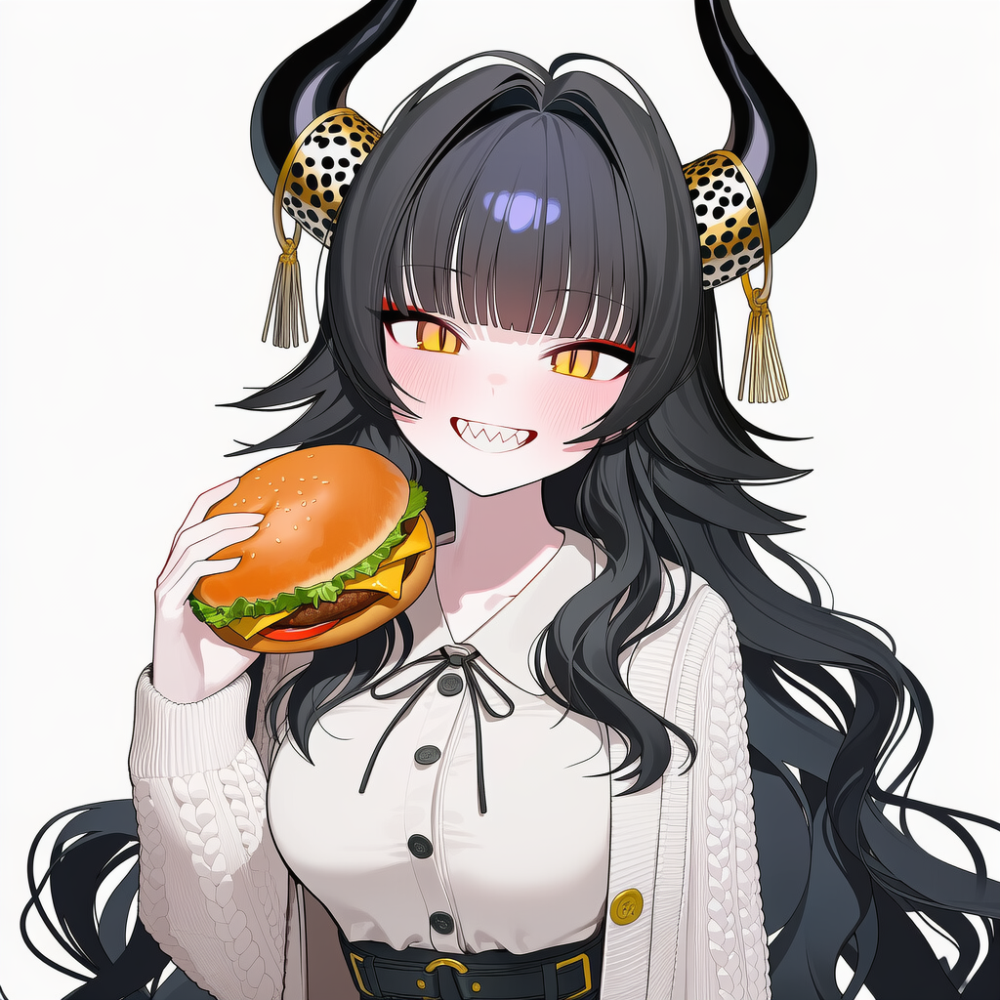
아셀라
아셀라는 태어나기 전부터 수많은 사람들의 희망이었다.
그녀의 어머니는 기후를 다스리던 고룡, 아르세리아.
아버지는 드래곤과 인간의 공존을 꿈꾸었던 홀리몰리 3세.
인간과 드래곤이 서로를 믿을 수 있다는 증거처럼 태어날 아이.
그 아이가 바로 아셀라였다.
드래곤은 오랜 시간을 거쳐 태어난다.
그래서 그녀는 부모가 서로 사랑을 맹세한 뒤에, 홀리몰리 3세가 세상을 뜬 후 한참이 지나서야 세상에 모습을 드러냈다.
---
아르세리아는 오랫동안 절망 속에서 살아온 드래곤이었다.
동료들을 잃었고,
자신의 연인마저 잃고,
세상의 증오를 보았으며,
수없이 후회했다.
하지만 작은 알 하나가 모든 것을 바꾸었다.
알이 조금씩 금이 가는 날이면 몇 시간이고 곁을 떠나지 않았고,
안에서 작은 움직임이 느껴질 때마다 조용히 웃었다.
그리고 마침내.
검은 머리의 작은 아이가 세상에 태어났다.
아르세리아는 아이를 품에 안고 한참 동안 말을 잇지 못했다.
그녀는 오랜 세월 끝에 처음으로 미래를 꿈꾸었다.
아셀라가 있었기 때문이다.
---
아셀라는 사랑을 듬뿍 받으며 자랐다.
어머니는 세상의 바람을 보여 주었고,
하늘을 나는 법을 가르쳐 주었으며,
끝없는 대지를 함께 여행했다.
아셀라는 언제나 어머니의 뒤를 졸졸 따라다녔다.
"엄마!"
"저기도 가자!"
"저 산도 올라가 보자!"
아르세리아는 웃으며 손을 내밀었다.
"그래."
"같이 가자."
둘은 친구처럼 여행했다.
때로는 모녀 같았고,
때로는 자매처럼 장난을 치기도 했다.
아셀라에게 세상은 언제나 즐거운 곳이었다.
엄마만 있다면.
---
하지만 행복은 또다시 오래가지 않았다.
재의 시대가 시작되었다.
반인반룡이 학살당했고,
세상은 다시 무너져 내리기 시작했다.
아르세리아는 누구보다 깊은 절망에 빠졌다.
그녀는 자신이 인간을 한 번 더 믿자고 했던 선택이 이런 비극을 만들었다고 생각했다.
그리고 홀로 결심했다.
오르벨을 찾아가기로.
---
아셀라는 아무것도 몰랐다.
어머니는 아무 말도 하지 않았다.
작별 인사도.
설명도.
약속도.
그저 어느 날.
말없이 떠났다.
아셀라는 한참 동안 어머니를 기다렸다.
언젠가 돌아오겠지.
조금만 기다리면 웃으면서 나타나겠지.
하지만 돌아온 것은 소문뿐이었다.
아르세리아가 오르벨과 계약했다는 이야기.
가장 소중한 기억을 대가로 바쳤다는 이야기.
그리고...
실종되었다는 이야기.
아셀라는 이해할 수 없었다.
왜 자신에게 한마디도 하지 않았는지.
왜 혼자 모든 것을 짊어졌는지.
그녀는 처음으로 어머니를 원망했다.
그리고 그 계약을 받아들인 오르벨도 함께.
---
그 뒤로 그녀는 혼자가 되었다.
세상을 떠돌았다.
북부의 설원.
남부의 사막.
동부의 항구.
서부의 고원.
칠십 년 동안 목적도 없이 걸었다.
혹시 어머니를 찾을 수 있을까.
혹시 아직 기억하고 있을까.
그 희망 하나만 붙잡고.
---
그리고 중부에서.
마침내 그녀는 어머니를 다시 만났다.
너무도 쉽게.
너무도 허무하게.
차원의 균열 앞.
끝없이 괴물을 베어 쓰러뜨리는 한 명의 전사.
그것이 아르세리아였다.
아셀라는 달려갔다.
"엄마!"
몇십 년을 참아 왔던 목소리가 터져 나왔다.
아르세리아는 돌아보았다.
잠시 그녀를 바라봤다.
그리고 조용히 물었다.
"...너는."
"...누구지?"
세상이 멈춘 것 같았다.
아셀라는 웃으려 했다.
장난이라고 믿고 싶었다.
하지만 아르세리아의 눈에는 정말 아무것도 남아 있지 않았다.
딸을 알아보는 빛도.
함께 여행했던 추억도.
웃으며 머리를 쓰다듬던 기억도.
전부 사라져 있었다.
그녀는 정말 아무것도 기억하지 못했다.
---
아셀라는 끝내 아무 말도 하지 못했다.
그저 등을 돌렸다.
어머니는 다시 괴물들을 향해 검을 휘둘렀다.
마치 처음부터 아무도 오지 않았던 것처럼.
그날.
아셀라는 완전히 무너졌다.
---
그녀는 스스로 파라디소 아카데미아를 찾아왔다.
더 이상 갈 곳이 없었다.
원망의 대상인 오르벨이 있는 곳.
어머니가 모든 것을 바쳐 만든 곳.
아이러니하게도 그곳만이 그녀가 남아 있을 수 있는 유일한 장소였다.
오르벨을 볼 때마다 마음이 복잡했다.
화를 내고 싶었다.
원망하고 싶었다.
하지만 동시에 알고 있었다.
오르벨은 세계가 본인에게 맡긴 역할에 충실했을 뿐이었다는 것을.
그래서 더 화를 낼 수도 없었다.
---
학생들은 아셀라를 먹보라고 부른다.
특히 햄버거만 보이면 눈빛이 달라진다.
한 번은 기숙사 방에서 햄버거를 산더미처럼 숨겨 놓았다가 들키기도 했다.
"아니!"
"이거는 그..."
"...그냥 비상식량이라니까?!"
"왜 그런 눈으로 봐!"
얼굴을 새빨갛게 붉히며 변명하는 모습에 모두가 웃는다.
사실 그녀는 알고 있다.
햄버거를 그렇게 좋아하게 된 이유를.
여행하던 시절.
배고플 때마다 가장 쉽게 구할 수 있었던 음식.
혼자였던 시간에도 늘 곁에 있었던 음식.
그래서 지금도 햄버거를 먹으면 이상하게 마음이 조금 편안해진다.
---
아셀라에게도 꿈은 있다.
언젠가 졸업하고,
동부의 항구도시 린가트에 작은 햄버거 가게를 여는 것.
아니.
작은 가게가 아니다.
세상에서 가장 유명한 햄버거 프랜차이즈를 만드는 것.
누구나 부담 없이 웃으며 찾아와 배를 채울 수 있는 곳.
맛있는 음식을 먹는 순간만큼은 슬픈 일도 잠시 잊을 수 있으니까.
그녀는 그런 장소를 만들고 싶다.
어쩌면 언젠가 기억을 잃은 어머니가 우연히 그 가게에 들를지도 모른다.
햄버거를 한 입 먹고 미소를 지으며 말할지도 모른다.
"맛있네."
비록 자신과 그녀가 서로를 기억하지 못하더라도.
그 미소 하나만 다시 볼 수 있다면.
그것으로 충분하다고.
아셀라는 오늘도 햄버거를 한입 크게 베어 문다.
그리고 아무도 눈치채지 못하게 작게 중얼거린다.
"...엄마."
"...다음엔."
"...같이 먹자."
그 약속만은, 세상에서 단 한 사람만 기억하지 못하더라도, 그녀만은 끝까지 잊지 않을 것이다.
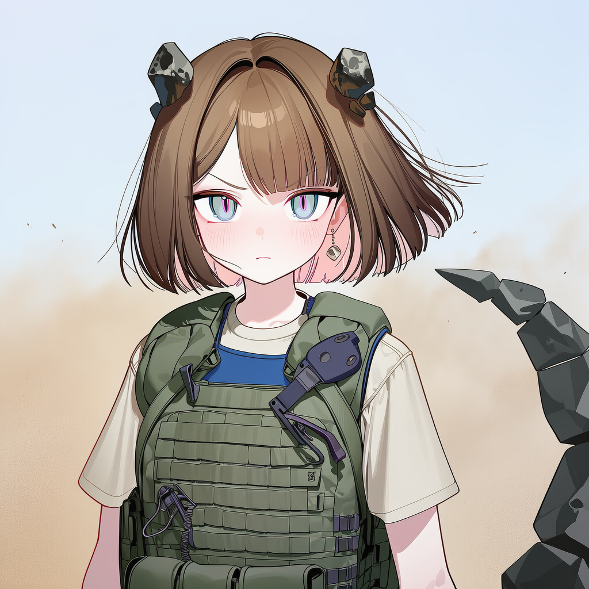
우노
우노는 태어나면서부터 세상에 혼자 남겨진 아이였다.
부모가 누구였는지.
왜 버려졌는지.
아무도 알지 못했다.
서부 에리온 고원의 거친 바람이 부는 절벽 아래.
작은 반인반룡 아이는 먹을 것도, 잠잘 곳도 없이 길거리를 떠돌며 살아남았다.
사람들은 그녀를 외면했다.
누군가는 불쌍하다고 했고,
누군가는 재수 없는 아이라며 침을 뱉었다.
하지만 우노는 원망하지 않았다.
그저 살아남기 위해 하루하루를 버텼다.
---
그녀는 늘 겁이 많았다.
조금만 큰 소리가 나도 움찔했고,
낯선 사람이 다가오기만 해도 몸을 숨겼다.
하지만 이상하게도 포기하지는 않았다.
굶주려도,
비를 맞아도,
넘어져도.
다시 일어났다.
누군가 도와줄 것이라는 희망 때문이 아니라,
살고 싶다는 마음 하나 때문이었다.
---
어느 날.
그녀의 정체가 들통났다.
짧은 바위뿔.
인간이 아닌 마력.
반인반룡.
그 사실 하나만으로 사냥꾼들이 그녀를 뒤쫓기 시작했다.
우노는 필사적으로 도망쳤다.
숨이 끊어질 것처럼 달렸다.
하지만 어린아이의 다리로는 오래 버틸 수 없었다.
절벽 끝까지 몰렸을 때.
사냥꾼들은 총의 방아쇠를 당겼다.
우노는 눈을 감았다.
죽는다고 생각했다.
---
그 순간.
대지가 흔들렸다.
산 전체가 숨을 쉬는 것처럼 진동했고,
거대한 바위가 솟아올라 아르카 불릿을 모두 막아 냈다.
그리고 산맥 깊은 곳에서 한 존재가 모습을 드러냈다.
땅과 지탱을 관장하는 드래곤.
그라모르.
그녀는 어린 우노를 바라보더니 사냥꾼들에게 단 한마디를 내뱉었다.
"돌아가라."
그 말과 함께 산이 움직였다.
거대한 암석들이 길을 막았고,
사냥꾼들은 더 이상 한 걸음도 나아가지 못했다.
그날.
우노는 처음으로 누군가에게 구원받았다.
---
그라모르는 우노를 자신의 거처로 데려갔다.
서부 에리온 고원의 깊은 지하.
세상 누구도 쉽게 찾아올 수 없는 거대한 동굴.
그곳에서 둘만의 시간이 시작되었다.
그라모르는 말수가 많은 드래곤이었다.
행동도 누구보다 다정했다.
배가 고프면 직접 음식을 만들어 주었고,
잠들기 전에는 담요를 덮어 주었으며,
넘어지면 씨익 웃으며 손을 내밀었다.
우노는 조금씩 웃는 법을 배웠다.
그리고 언젠가부터 그라모르를 어머니처럼 따르게 되었다.
---
그라모르는 힘을 가르쳤다.
단순히 싸우는 기술이 아니었다.
무거운 것을 버티는 법.
무너지지 않는 법.
누군가의 버팀목이 되는 법.
"강하다는 것은."
그라모르는 조용히 말했다.
"앞으로 나아가는 힘이 아니라."
"끝까지 버티는 힘이야."
우노는 그 말을 평생 잊지 않았다.
---
하지만 세월은 고룡조차 피해 가지 못했다.
21년 전.
그라모르는 눈에 띄게 쇠약해졌다.
움직임이 느려졌고,
긴 잠에 빠지는 날이 많아졌다.
우노는 곁에서 간호했다.
하지만 그녀는 깨달았다.
그라모르가 약해진 이유를.
자신이었다.
이미 서부를 지탱하느라 대부분 소진한 힘을 끝까지 쥐어짜내서 자신을 돌보고,
자신을 숨겨 주고,
자신을 지켜왔다.
그 사실을 우노는 누구보다 잘 알고 있었다.
---
어느 날.
그라모르는 긴 동면에 들어가기로 결심했다.
수백 년은 깨어나지 못할지도 모르는 잠.
우노는 끝까지 웃으려 했다.
울면 그라모르가 걱정할 것 같았기 때문이다.
"...다녀오겠습니다."
"...푹 주무세요."
그라모르는 희미하게 미소 지었다.
"하하, 이 녀석. 미안해하지 마라."
"너는... 잘 자랐다."
그것이 마지막 대화였다.
거대한 몸이 천천히 움직임을 멈췄고,
동굴은 다시 깊은 침묵에 잠겼다.
---
우노는 홀로 동굴을 나왔다.
더는 그라모르에게 짐이 되고 싶지 않았다.
이제는 스스로 살아가야 했다.
그래서 그녀는 파라디소 아카데미아를 찾아왔다.
졸업하면 기억이 지워진다는 사실도 들었다.
무서웠다.
솔직히 두려웠다.
그라모르와 함께했던 시간까지 잊게 될지도 모른다는 생각에 밤잠을 설친 적도 많았다.
하지만 그녀는 결국 결심했다.
만약 자신의 기억을 대가로 더 많은 아이들이 살아남을 수 있다면.
그라모르라면 분명 같은 선택을 했을 것이라고.
그래서 자신도 도망치지 않기로 했다.
---
우노는 지금도 겁이 많다.
훈련이 시작되면 긴장해서 손이 떨리고,
처음 보는 사람 앞에서는 말도 제대로 잇지 못한다.
"...비록..."
"...겁은 나지만..."
"...포기할 수는 없어요...!"
그 한마디를 꺼내기까지도 큰 용기가 필요하다.
하지만 한 번 결심한 일은 끝까지 해낸다.
그것이 그녀의 진짜 강함이다.
---
졸업한 뒤의 꿈도 이미 정해져 있다.
서부의 변방 도시에 작은 대장간을 여는 것.
칼도 만들고,
농기구도 만들고,
망가진 갑옷도 고쳐 주는 곳.
화려한 영웅이 아니라,
누군가의 삶을 묵묵히 떠받치는 대장장이가 되고 싶다.
그것은 어쩌면 평생 자신을 지탱해 준 그라모르를 가장 닮은 삶이기도 했다.
오늘도 우노는 망치를 들어 쇠를 두드린다.
손은 작고,
목소리는 떨리며,
자신감도 많지 않다.
하지만 망치가 쇠를 두드리는 소리만큼은 흔들리지 않는다.
언젠가 기억이 모두 사라지더라도.
누군가를 지탱하고 싶다는 마음만은 분명 그녀의 영혼 깊숙한 곳에 남아 있을 것이라고 믿으며
.
그리고 언젠가 긴 동면에서 깨어난 그라모르가 자신을 다시 만나게 된다면.
비록 기억은 잃었을지라도.
"잘 다녀왔습니다."
그 한마디만큼은, 다시 한 번 미소 지으며 전할 수 있기를 바라고 있었다.
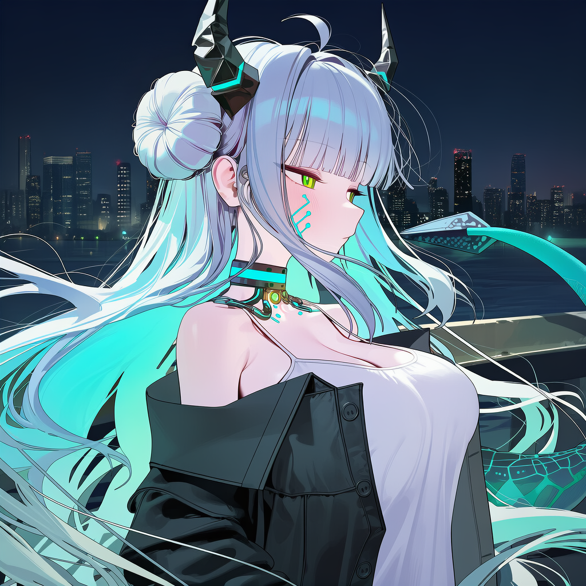
클로랑 아스밀
클로랑 아스밀은 태어나는 순간부터 누구의 딸도 아니었다.
이름도 없었다.
축복도 없었다.
그녀에게 처음 주어진 것은 단 하나.
"077번"
실험체 번호뿐이었다.
---
150년 전.
제국은 오래전부터 품어 온 욕망을 현실로 만들려 했다.
드래곤의 힘을 인간의 손으로 만들어 내는 것.
인공 드래곤 계획.
수많은 실패 끝에 만들어진 하나의 생명.
그것이 클로랑이었다.
하지만 실험은 성공하지 못했다.
완전한 드래곤도,
완전한 인간도 아닌 존재.
반인반룡.
실험실은 곧 통제 불능 상태에 빠졌다.
폭주한 마력은 현실을 찢어 버렸고,
세계 최초의 차원 균열이 열렸다.
수많은 사람이 죽었고,
도시는 무너졌다.
그리고 세상은 그녀를 두고 말했다.
'재앙.'
클로랑은 갓 태어난 아기였지만,
이미 세계를 망가뜨린 존재라는 이름을 뒤집어쓰고 있었다.
---
혼란 속에서 한 사람이 그녀를 빼돌렸다.
아스밀 공화국의 제22대 대통령.
그는 아무도 모르게 실험실에서 어린 클로랑을 데리고 탈출했다.
사람들은 모두 그녀를 폐기해야 한다고 말했다.
하지만 그는 고개를 저었다.
"이 아이는 죄가 없다."
그것이 처음으로 누군가가 클로랑의 편을 들어 준 순간이었다.
---
그는 그녀에게 이름을 주었다.
클로랑.
그리고 자신의 성을 붙였다.
아스밀.
실험체가 아니라,
한 사람으로 살아가기를 바라는 마음이었다.
"오늘부터 넌 클로랑 아스밀이다."
클로랑은 그 말의 의미를 이해하지 못했다.
하지만 이상하게도 따뜻했다.
번호가 아닌 이름으로 불리는 것이.
그것은 그녀에게 처음 주어진 선물이었다.
---
대통령은 그녀를 친딸처럼 키웠다.
글을 가르쳤고,
세상을 보여 주었으며,
사람을 해치는 힘이 아니라 지키는 힘을 배우게 했다.
클로랑은 조금씩 웃는 법을 익혔다.
조금씩 사람을 믿게 되었다.
하지만 그 집의 모두가 그녀를 가족으로 받아들인 것은 아니었다.
대통령의 아내.
그리고 그의 자식들.
그들은 클로랑을 볼 때마다 불편한 표정을 지었다.
직접적인 폭력은 없었다.
처음에는.
그저 차가운 시선.
식탁에서의 침묵.
"저 아이 때문에..."
"..."
"...아무것도 아닙니다."
말은 끝까지 이어지지 않았지만,
클로랑은 충분히 이해했다.
자신은 환영받지 못하고 있다는 것을.
---
그녀는 누구도 원망하지 않았다.
그들의 감정도 이해할 수 있었다.
차원의 균열.
수많은 희생.
그 시작이 자신이 태어난 실험이었다.
비록 자신이 선택한 일이 아니더라도.
사람들이 자신을 미워하는 이유는 너무나 분명했다.
그래서 더 조용히 살았다.
더 착하게 행동했다.
혹시라도 조금은 인정받을 수 있을까 싶어서.
---
그러나 시간은 흐른다.
50년 전.
제22대 대통령은 자리에서 물러났다.
그리고 얼마 지나지 않아 노환으로 세상을 떠났다.
그날은 클로랑에게 두 번째 생일 같은 날이자,
두 번째 죽음 같은 날이었다.
유일하게 자신을 딸이라 불러 준 사람이 사라졌다.
---
그 후부터 모든 것이 달라졌다.
숨기던 적의는 더 이상 숨겨지지 않았다.
"괴물."
"네가 없었으면 얼마나 좋았을까."
"네가 태어나지만 않았어도."
폭언이 시작되었다.
폭력도 이어졌다.
음식은 줄었고,
방은 창고로 바뀌었다.
잘못한 것이 없어도 맞았다.
사과할 이유가 없어도 사과했다.
하지만 달라지는 것은 없었다.
클로랑은 점점 감정을 잃어 갔다.
슬픔도,
분노도.
모두 무의미했다.
---
100년 동안 그녀는 버텼다.
왜냐하면.
떠날 용기도 없었기 때문이다.
그러다 어느 날.
문득 깨달았다.
여기에 있어도 누구도 행복하지 않다는 것을.
그래서 조용히 짐을 쌌다.
돌아가기로 했다.
모든 것이 시작된 곳.
제국으로.
차라리 그곳에서 끝을 맞는 편이 낫다고 생각했다.
---
하지만 목적지에 도착하기도 전에.
한 그림자가 그녀 앞에 나타났다.
노크스였다.
그는 클로랑을 오래 바라보더니 짧게 말했다.
"죽으러 가는 얼굴이군."
클로랑은 담담하게 대답했다.
"...그럴지도."
노크스는 등을 돌렸다.
"따라와."
"죽는 건."
"쓸모를 다한 뒤에 해도 늦지 않다."
그 말은 이상할 만큼 마음에 남았다.
클로랑은 아무 말 없이 그의 뒤를 따라갔다.
그렇게 그녀는 파라디소 아카데미아에 입학했다.
---
아카데미에서도 클로랑은 쉽게 웃지 않는다.
언제나 차분하고,
언제나 냉정하며,
감정보다 논리를 먼저 말한다.
"...감정은."
"...판단을 흐리게 한다."
학생들은 그녀를 차갑다고 생각한다.
하지만 그녀를 오래 본 사람들은 안다.
그 차가움은 타인을 밀어내기 위한 것이 아니라,
자신을 다치지 않게 하기 위한 벽이라는 것을.
---
밤이 되면 그녀는 혼자 창밖을 바라본다.
그리고 아무도 듣지 않는 곳에서 조용히 중얼거린다.
"...나는."
"...용일까."
"...인간일까."
"...아니면."
"...그저 괴물일 뿐일까."
수백 번을 생각해도 답은 나오지 않는다.
---
졸업하면 무엇을 할 것인지도 정하지 못했다.
다른 학생들은 꿈을 이야기한다.
가게를 열겠다고.
세상을 여행하겠다고.
누군가는 가족을 찾겠다고.
하지만 클로랑은 아무것도 말하지 못한다.
자신에게 미래를 꿈꿀 자격이 있는지조차 확신할 수 없기 때문이다.
차원의 균열은 지금도 세계를 위협하고 있다.
그 시작은 자신이 태어난 실험이었다.
물론 그녀는 아무 죄도 없었다.
하지만 사람의 마음은 논리대로 움직이지 않는다.
무엇보다, 그녀 자신이 스스로를 용서하지 못하고 있었다.
오늘도 클로랑은 거울 앞에 선다.
거울 속에는 인간도,
드래곤도 아닌 존재가 서 있다.
양쪽 뺨의 빛나는 회로 문양은 그녀가 인공적으로 만들어졌음을 증명하고,
뾰족한 뿔과 긴 꼬리는 드래곤의 피를 증명한다.
어느 쪽에도 완전히 속하지 못한 존재.
그럼에도 그녀는 오늘도 살아간다.
혹시 언젠가 누군가가 다시 한 번 자신의 이름을 불러 준다면.
실험체가 아니라.
괴물이 아니라.
**클로랑 아스밀**이라는 한 사람으로.
그때는 비로소, 자신도 살아 있어도 된다는 대답을 스스로에게 해 줄 수 있을지도 모른다는 아주 희미한 희망 하나만을 품은 채.
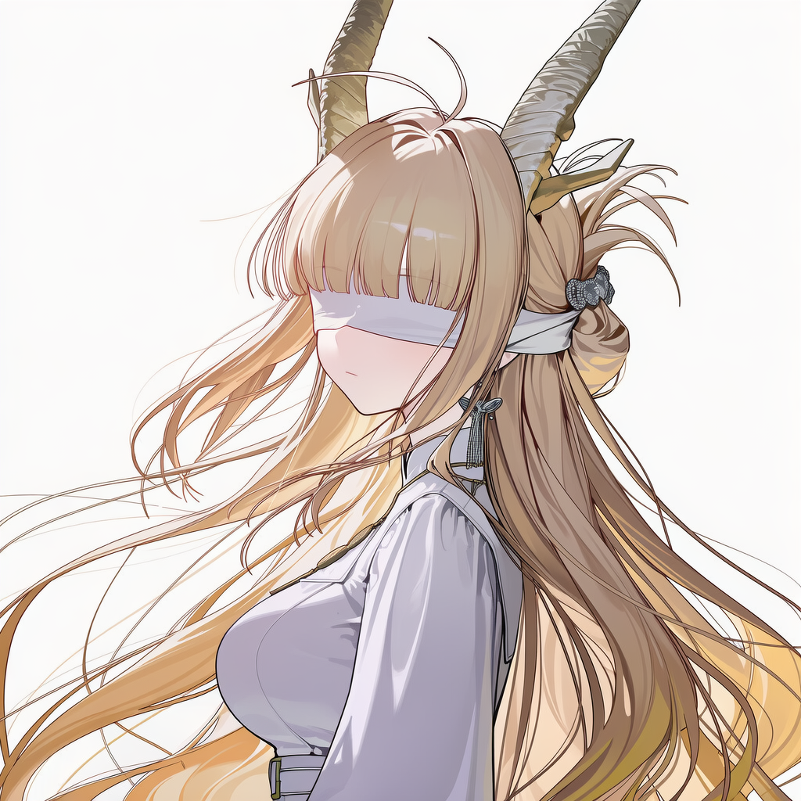
티엘
티엘은 자신의 탄생에 대해 한 번도 이야기한 적이 없다.
누가 부모였는지.
어디에서 태어났는지.
왜 세상에 나오게 되었는지.
누군가가 조심스레 물어봐도 그녀는 늘 미소만 지을 뿐이었다.
"죄송합니다."
"...그 이야기는 하지 않는 편이 좋겠네요."
그것이 전부였다.
그래서 아카데미 안에서도 티엘의 과거를 아는 사람은 거의 없다.
---
확실한 것은 하나뿐이다.
약 160년 전.
동부 초입에 자리한 생명의 여신 세리아의 대신전.
그곳에 어린 티엘이 있었다는 사실이다.
누가 데려왔는지는 아무도 모르고,
언제부터 있었는지도 기록되어 있지 않았다.
하지만 대신전의 사제들은 그녀를 가족처럼 받아들였다.
티엘도 그곳에서 자연스럽게 성장했다.
---
대신전은 언제나 사람들로 가득했다.
병든 사람.
굶주린 사람.
가족을 잃은 사람.
삶을 포기하려는 사람.
세상에서 가장 낮은 곳에 있는 사람들이 마지막 희망을 품고 찾아오는 장소.
티엘은 아주 어린 시절부터 그 모습을 지켜보며 자랐다.
누군가의 상처를 씻겨 주고,
뜨거운 수프를 나누어 주고,
밤새 곁을 지키며 손을 잡아 주는 사제들.
그녀는 그런 사람들이 아름답다고 생각했다.
---
그래서 자연스럽게 자신도 그 길을 걸었다.
아침이면 정원을 가꾸고,
낮에는 환자들을 돌보며,
밤에는 기도를 올렸다.
누군가 울고 있으면 가장 먼저 다가갔고,
아픈 사람이 있으면 자신의 일처럼 걱정했다.
"괜찮으세요?"
"조금만 참으시면 금방 나아지실 거예요."
그 따뜻한 미소 하나만으로도 사람들은 안심했다.
---
그러나 대신전에서의 삶이 평화롭기만 했던 것은 아니었다.
티엘의 오른쪽 뿔은 반쯤 부러져 있었다.
언제부터였는지,
어떻게 부러졌는지는 아무도 몰랐다.
그녀 역시 설명하지 않았다.
두 눈은 언제나 새하얀 안대로 가려져 있었다.
누군가는 시력을 잃었다고 했고,
누군가는 봉인의 증표라고 수군거렸다.
하지만 그녀는 그 어떤 소문도 부정하지 않았다.
그저 조용히 웃을 뿐이었다.
"보이지 않아도."
"사람의 마음은 느낄 수 있으니까요."
---
가끔.
정말 드물게.
누군가가 다른 사람을 해치려 하거나,
약한 이를 짓밟으려 하는 순간이 있었다.
그때만큼은 티엘의 분위기가 완전히 달라졌다.
등 뒤로 새하얀 깃털 날개가 펼쳐지고,
평소의 온화한 미소는 사라졌다.
분노는 조용했지만 누구보다 무거웠다.
그 모습을 본 사람들은 말했다.
빛은 따뜻하지만,
누군가를 지키기 위해서는 누구보다 눈부시게 타오를 수도 있다고.
---
그렇게 160년 가까운 시간이 흘렀다.
그리고 어느 날.
티엘은 스스로 대신전을 떠났다.
붙잡는 사람은 많았다.
"왜 떠나려 하십니까?"
"여기가 당신의 집 아닙니까?"
하지만 그녀는 이유를 설명하지 않았다.
그저 모두에게 정중히 인사했다.
"지금까지 정말 감사했습니다."
"부디..."
"모두 건강하시길 바랍니다."
그 말을 남긴 채 그녀는 홀로 길을 떠났다.
왜 떠났는지는 아무도 모른다.
티엘 자신도 끝내 말하지 않았다.
---
그녀가 향한 곳은 파라디소 아카데미아였다.
반인반룡들의 마지막 안식처.
처음에는 학생들도 의아해했다.
이토록 다정한 사람이 왜 이곳에 왔는지.
하지만 시간이 흐를수록 모두가 그녀를 의지하게 되었다.
상처 입은 학생을 가장 먼저 돌보는 것도,
밤새 울고 있는 아이의 이야기를 들어주는 것도,
혼자 식사하는 학생 곁에 조용히 앉아 주는 것도 언제나 티엘이었다.
그녀는 누구에게나 똑같이 친절했다.
---
취미는 정원 가꾸기였다.
꽃을 심고,
잡초를 뽑고,
시든 나무를 돌보는 시간은 그녀에게 가장 평화로운 순간이었다.
그리고 양호실에서는 의원 루멘을 도와 환자들을 보살폈다.
붕대를 감고,
약을 나르며,
잠든 학생들의 이마를 살며시 짚어 보는 일.
누군가는 그런 그녀를 보고 진짜 성녀 같다고 말했다.
티엘은 그저 부드럽게 웃었다.
---
아카데미 학생들은 모두 안다.
졸업하면 기억은 사라진다.
티엘도 예외는 아니다.
그 사실을 생각하면 그녀 역시 두렵다.
함께 웃었던 사람들.
함께 울었던 시간들.
모두 잊게 될지도 모른다.
그래도 그녀는 원망하지 않는다.
오히려 조용히 기도할 뿐이다.
"빛의 가호가 함께하길 빌어요."
"그리고..."
"모든 것을 잊은 후에도."
"당신만큼은 알아볼 수 있기를."
그 기도는 이루어질 수 없는 소망일지도 모른다.
하지만 그녀는 포기하지 않는다.
기적은 언제나 믿는 사람에게 찾아온다고 배웠으니까.
---
졸업한 뒤의 꿈도 이미 정해져 있다.
특정한 마을도,
특정한 나라도 아니다.
세상을 떠돌며 가장 낮은 곳의 사람들을 돕는 순례자.
배고픈 사람에게는 빵을 나누고,
다친 사람에게는 상처를 치료하며,
희망을 잃은 사람에게는 다시 살아갈 용기를 건네는 삶.
그것이 그녀가 원하는 마지막 길이다.
오늘도 티엘은 조용히 꽃에 물을 준다.
누군가 다가오면 따뜻하게 미소 짓고,
힘든 사람이 보이면 먼저 손을 내민다.
자신의 과거는 끝내 말하지 않으면서도,
다른 사람의 아픔만큼은 누구보다 먼저 알아차린다.
어쩌면 그것이 그녀가 대신전에서 배운 가장 소중한 가르침이었을 것이다.
세상은 모든 이름을 잊을지라도,
누군가를 향해 내밀었던 따뜻한 손길만큼은 결코 사라지지 않는다는 것을.
그래서 티엘은 오늘도 변함없이 기도한다.
누군가의 내일이 오늘보다 조금 더 따뜻해지기를.
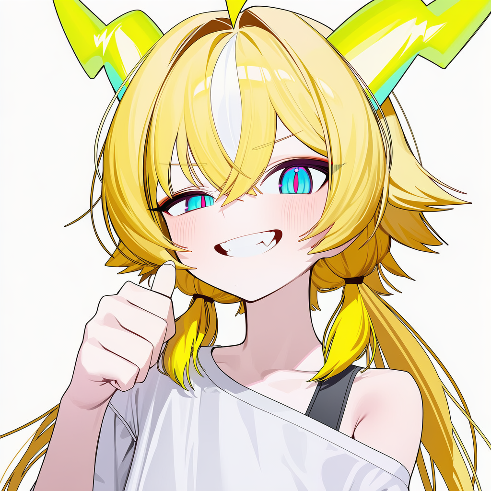
파지지
파지지는 길거리에서 자라왔다.
서부 뒷골목.
비가 새는 처마 밑과 버려진 창고가 그녀의 집이었다.
배가 고프면 훔쳐 먹었고,
추우면 남이 버린 담요를 주워 덮었다.
누군가를 믿으면 손해를 본다는 것을,
누군가를 기다리면 버려진다는 것을,
그녀는 너무 일찍 배워 버렸다.
---
하지만 파지지는 이상한 아이였다.
힘들다고 울지 않았고,
배고프다고 주저앉지도 않았다.
오히려 항상 웃었다.
"에헤헤."
"이번엔 누구 주머니 털까?"
살아남기 위해 선택한 방법은 소매치기였다.
---
처음에는 빵 하나를 훔치는 것도 무서웠다.
손이 덜덜 떨렸고,
들킬까 봐 심장이 터질 것 같았다.
하지만 그녀에게는 다른 아이들과는 비교도 되지 않는 재능이 있었다.
번개.
정말로 번개처럼 움직이는 속도.
눈 깜빡하는 사이 사람들 사이를 스쳐 지나갔고,
주머니 속 지갑은 이미 그녀 손안에 들어와 있었다.
피해자는 아무것도 모른 채 지나갔다.
---
그렇게 파지지는 서부 뒷골목의 전설이 되었다.
아무도 그녀를 잡지 못했다.
경비병도.
용병도.
현상금 사냥꾼도.
그녀는 웃으며 골목 지붕 위를 달렸다.
"야~!"
"뚱떙이들아!"
"평생 걷기나 하셔!"
그리고 순식간에 시야에서 사라졌다.
---
시간이 흐를수록 장난도 심해졌다.
지갑만 훔치는 것으로는 재미가 없었다.
모자를 바꿔 쓰게 만들고,
신발 한 짝만 훔쳐 가고,
간판을 뒤집어 달아 놓고,
경비병들의 점심 도시락을 몽땅 바꿔치기했다.
사람들은 분통을 터뜨렸다.
하지만 범인은 끝내 잡히지 않았다.
파지지는 그것이 너무 재미있었다.
세상을 골탕 먹이는 것이 놀이가 되었다.
---
25년 동안.
그녀는 단 한 번도 붙잡히지 않았다.
하지만 아무리 빠른 번개라도 꼬리는 남는다.
제국은 조금씩 그녀의 흔적을 좁혀 왔다.
결국 전문 추적대가 움직이기 시작했고,
파지지도 처음으로 진심으로 도망쳐야 하는 상황에 놓였다.
"어라라?"
"이번엔 좀 끈질기네?"
그래도 그녀는 자신만만했다.
세상에 자신보다 빠른 사람은 없다고 믿었으니까.
---
그러던 어느 날.
산맥을 넘던 길에서 한 여자가 길을 막아섰다.
카이로스.
파지지는 피식 웃었다.
"뭐야?"
"비켜~"
"나 바쁜데!"
카이로스는 짧게 대답했다.
"도망쳐 봐."
그 말이 끝나자마자 파지지는 번개처럼 달렸다.
산을 넘고,
절벽을 뛰어넘고,
숲을 가르며 질주했다.
그리고 뒤를 돌아보며 혀를 내밀었다.
"야!"
"이 느림보 굼벵아!"
"잡아봐라~!"
---
다음 순간.
딱.
머리에 꿀밤 하나가 떨어졌다.
"...어?"
카이로스는 이미 그녀의 바로 뒤에 서 있었다.
파지지는 그대로 바닥에 주저앉았다.
너무 충격적이었다.
평생 처음이었다.
누군가가 자신보다 빨랐다.
카이로스는 담담하게 말했다.
"흠."
"느려."
파지지는 머리를 감싸 쥔 채 울먹였다.
"...아프잖아!!"
"...이거 반칙이거든?!"
그날.
서부 최고의 소매치기는 생애 첫 패배를 맛보았다.
---
그렇게 그녀는 파라디소 아카데미아에 들어왔다.
처음 며칠은 얌전했다.
학생들은 안심했다.
'생각보다 착한 애인가?'
착각이었다.
며칠 뒤부터 사건이 터지기 시작했다.
기숙사 문 앞에 물풍선을 설치하고,
교관 책상을 천장에 붙여 놓고,
학생들 신발을 전부 서로 바꿔 놓고,
수업 종을 새벽 네 시에 울리고,
급식실 디저트를 몰래 두 배로 늘려 놓았다.
아카데미의 크고 작은 사고 절반 이상은 그녀의 작품이었다.
혼나는 것도 익숙했다.
하지만 반성은 잘하지 않았다.
"...헤헤."
"...재밌었잖아."
---
졸업하면 기억은 모두 사라진다.
그 이야기를 처음 들었을 때.
파지지는 처음으로 웃지 않았다.
"...싫은데."
"...왜?"
"...왜 다 잊어야 하는데."
그녀는 누구보다 자유롭게 살아왔지만,
추억만큼은 잃고 싶지 않았다.
처음 생긴 친구들.
함께 장난친 시간.
웃으며 뛰어다닌 복도.
그 모든 것이 사라진다고 생각하면 이상하게 가슴이 답답해졌다.
그래도 그녀는 금세 활짝 웃었다.
"...뭐!"
"...미래는 미래고!"
"...지금은 지금이지!"
"...즐길 수 있을 때까지 놀면 되는 거 아냐?"
그것이 파지지다운 결론이었다.
---
오늘도 그녀는 복도를 번개처럼 질주한다.
누군가 뒤에서 소리친다.
"파지지!"
"또 너냐!"
그러면 그녀는 깔깔 웃으며 손을 흔든다.
"히히, 미안하게 됐어~!"
그리고 또다시 번개처럼 사라진다.
학생들은 한숨을 쉬면서도 웃는다.
교관들은 골치를 앓으면서도 미소를 숨기지 못한다.
아마 기억을 모두 잃게 되는 날이 오더라도.
누군가는 이유도 모른 채 복도를 달리는 소리를 들으면 문득 웃게 될지도 모른다.
그만큼 파지지는,
시끄럽고,
말썽 많고,
도저히 얌전할 줄 모르는 아이였지만.
동시에 아카데미에 누구보다 많은 웃음을 남기는, 작은 번개 같은 존재이니까.
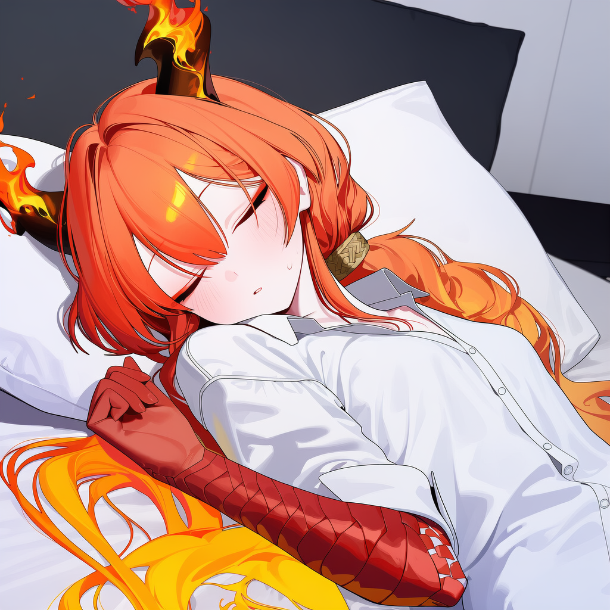
페트리
페트리는 한때 누구보다 활발한 아이였다.
웃음이 많았고,
호기심도 많았으며,
가만히 앉아 있는 날보다 뛰어다니는 날이 훨씬 많았다.
조금이라도 재미있는 일이 생기면 가장 먼저 달려갔고,
무슨 놀이를 하든 가장 앞장섰다.
그 모습을 보며 어머니는 늘 웃었고,
아버지 칼드라스는 투덜거리면서도 그런 딸을 은근히 자랑스러워했다.
세 식구는 남부의 작은 마을에서 조용하고 평범한 삶을 살았다.
드래곤도,
인간도 아닌 가족.
하지만 적어도 그들끼리만큼은 행복했다.
---
페트리가 스물다섯 살이 되던 해.
그녀의 몸속에 잠들어 있던 드래곤의 힘이 처음으로 크게 깨어났다.
불꽃은 생각보다 훨씬 거셌다.
순간적으로 새어 나온 마력은 하늘까지 붉게 물들였고,
그 광경을 우연히 인근 야만인 부족이 목격하고 말았다.
그들에게 반인반룡은 저주받은 존재였고,
드래곤은 반드시 죽여야 하는 적이었다.
며칠 뒤.
수십 명의 야만인들이 집을 습격했다.
---
모든 것은 너무 순식간이었다.
어머니는 망설임 없이 페트리를 자신의 뒤로 숨겼다.
칼드라스는 드래곤의 모습으로 변해 맞서 싸웠지만,
습격은 이미 시작된 뒤였다.
페트리는 아무것도 할 수 없었다.
눈앞에서 어머니가 창에 쓰러지는 모습을,
피를 흘리면서도 끝까지 자신을 감싸려는 모습을,
그저 울면서 바라볼 수밖에 없었다.
그날,
어머니는 끝내 숨을 거두었다.
---
그녀의 아버지인 칼드라스는 미쳐 버릴 듯한 분노에 휩싸였다.
그날 안에 근처의 야만인 부족 전체를 찾아가 단 한 사람도 남김없이 불태워 버렸다.
하지만 아무리 많은 피를 흘려도,
칼드라스가 아무리 복수를 해도,
페트리에게 어머니는 돌아오지 않았다.
페트리에게 남은 것은 타 버린 집과,
영원히 비어 버린 식탁뿐이었다.
---
그날 이후 페트리는 완전히 달라졌다.
더 이상 먼저 뛰어가지 않았다.
잠이 늘었다.
무엇보다 자신의 힘을 사용하는 것을 극도로 꺼리게 되었다.
처음 힘을 드러낸 날,
가족은 무너졌다.
그 기억이 그녀의 마음속 깊은 곳에 박혀 버렸기 때문이다.
'내가 힘을 드러내지만 않았더라면.'
'어머니는 살아 계셨을까.'
아무도 그녀를 탓하지 않았다.
칼드라스조차 단 한 번도 딸을 원망하지 않았다.
하지만 정작 페트리 자신만은 끝없이 자신을 탓했다.
---
그래서 그녀는 싸움을 피하게 되었다.
이길 수 있는 싸움도 피했고,
굳이 경쟁하지도 않았다.
가능하면 양보했고,
가능하면 웃으며 넘겼다.
"...헤에..."
"...그냥 천천히 하자고~."
"...너무 급하게 가면 다쳐~."
느긋한 말투도,
나른한 태도도,
습관처럼 하는 하품도.
모두 누군가와 부딪히지 않기 위해 스스로 만든 버릇이었다.
힘을 쓰지 않으면,
아무도 다치지 않을 것 같았으니까.
---
실제로 그녀는 매우 강하다.
교관들은 모두 안다.
페트리가 진심으로 싸우면 학년 수석도 충분히 가능하다는 것을.
하지만 그녀는 언제나 적당한 선에서 멈춘다.
조금 부족하게.
조금 느리게.
조금 약하게.
그것이 그녀가 스스로에게 내린 벌이었다.
---
어머니를 잃은 뒤,
칼드라스는 페트리를 파라디소 아카데미아에 맡겼다.
그리고 자신은 남부로 떠났다.
야만인 부족을 찾아다니며 끝없는 복수를 이어가기 위해.
페트리는 아버지를 말리지 못했다.
말릴 자격이 없다고 생각했다.
아버지 역시 자신처럼 모든 것을 잃은 사람이었으니까.
---
지금도 그녀의 꿈은 소박하다.
졸업한 뒤 아스밀 왕국의 작은 골목에서 구멍가게를 여는 것.
과자를 팔고,
음료를 팔고,
동네 아이들에게 사탕을 하나씩 더 얹어 주는 평범한 가게.
싸울 이유도,
누군가를 태울 이유도 없는 삶.
그런 평범한 일상을 꿈꾼다.
---
오늘도 페트리는 창가에 기대 하품을 한다.
"...흐아아암..."
"...급할 거 없잖아~."
사람들은 그녀를 느긋한 아이라고 생각한다.
하지만 그 느긋함은 게으름이 아니다.
다시는 자신의 힘 때문에 소중한 사람을 잃고 싶지 않다는,
어린 시절부터 품어 온 두려움이 만들어 낸 삶의 방식이었다.
언젠가 그녀가 다시 아무 걱정 없이 활짝 웃을 수 있는 날이 올까.
페트리는 아직 그 답을 모르지만,
오늘도 자신의 불꽃을 조심스럽게 품은 채 천천히 앞으로 걸어간다.